Objects Experiment
我们回顾一下cluster的配置
- 有
node0，node1，node2三个节点 node0是控制平面所在节点
Config
Context related
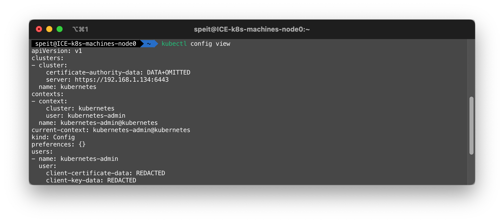
查看本地context
Note
该操作查看的是本地记录的context，取决于当前用户目录下.kube/config的内容或者是KUBECONFIG变量定义的配置文件的内容
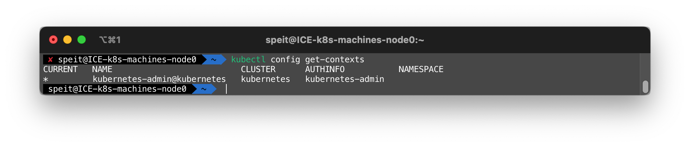
查看当前使用的Context
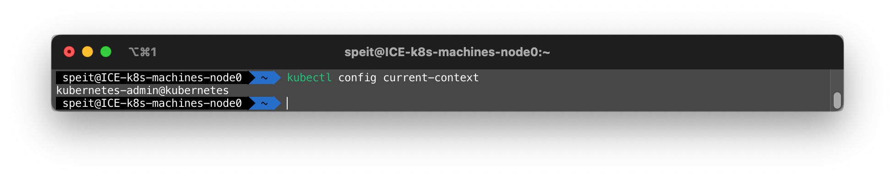
使用kubectl config --kubeconfig=${PATH_TO_CONFIG}可以新增、修改配置文件。${PATH_TO_CONFIG}要被替换成配置文件的路径。如果该路径不存在则会被创建
-
添加一个cluster，名为
development，地址是https://1.2.3.4，证书是fake-ca-file
-
添加一个cluster，名为
development，不验证证书 -
添加一个credential，名为
developer，使用公私钥认证 -
添加一个credential，名为
experimenter，使用用户名-密码认证 -
添加一个context，名为
dev-frontend，位于frontend命名空间下，使用用户developer和集群development -
添加一个context，名为
dev-storage，位于storage命名空间下，使用用户developer和集群development -
添加一个context，名为
exp-scratch，位于default命名空间下，使用用户experimenter和集群scratch
我们可以看到，当第一行执行完后，目录下多出了一个config-demo文件，这是因为运行命令时指定了config-demo作为配置文件名
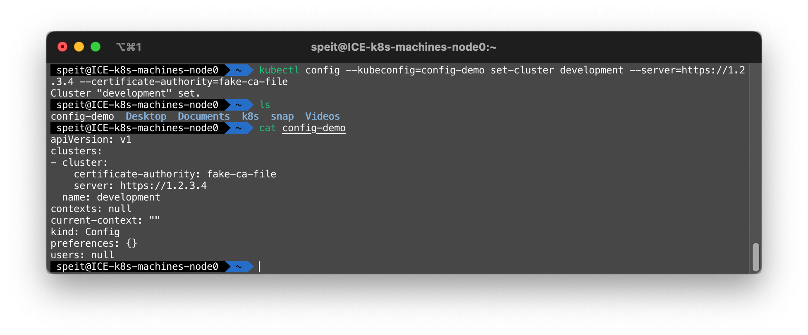
执行完所有命令后，config-demo中的内容会发生大幅改变
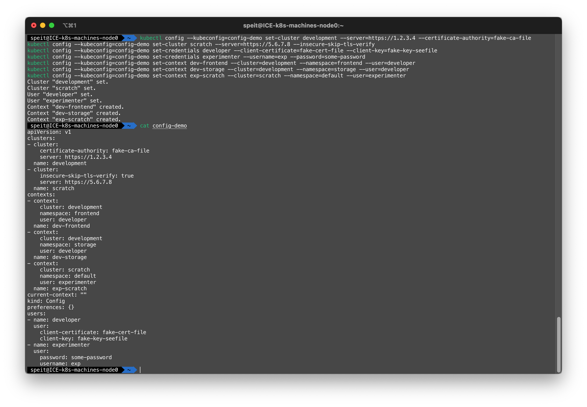
这里放一张图描述Config和k8s的关系
flowchart LR
subgraph K8S
direction LR
B1(contexts) --> B2(context1)
B1(contexts) --> B4(...)
B2 --> C1(cluster)
B2 --> C2(user)
B2 --> C3(namespace)
end
subgraph $HOME/.kube/config
direction LR
A1(clusters) -. + .-> A2[users] -- = --> A3[current-contex]
A3[current-contex] --> B2
end因此：
应该被解释为：
- 修改
config-demo use-context，使用一个contextdev-frontendcontext名字是dev-frontend
Warning
config文件的权限必须是$USER.$GROUP:660
Note
个人认为kubectl config只是提供了更好的修改config文件的方法，完全可以通过手动修改config做到这一点
Warning
kubectl --insecure-skip-tls-verify 选项可以跳过证书验证
实践 - 远程控制K8S
假设我们意图从一台笔记本连接在JCloud上部署好的集群（使用kubeadm部署）。我们首先查看/etc/kubernetes/admin.conf的内容
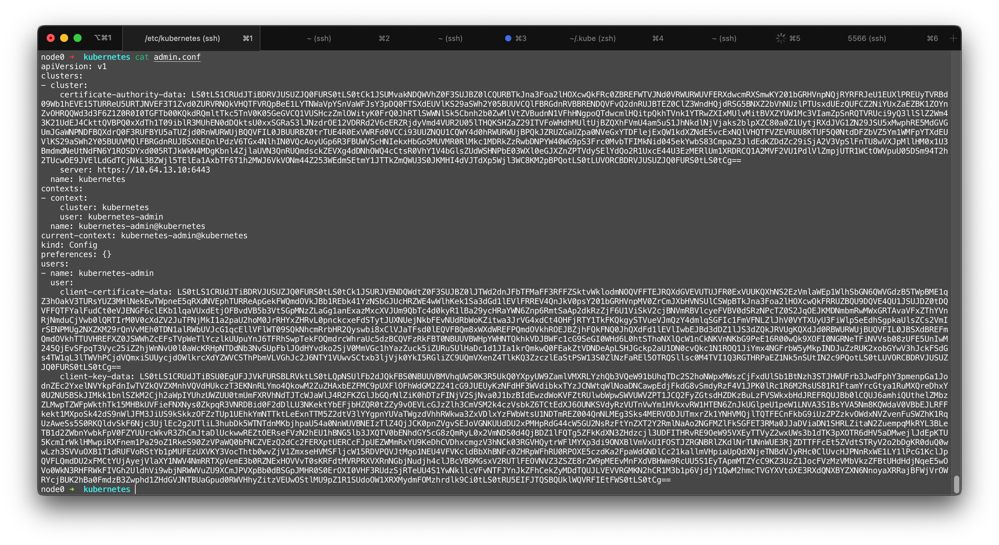
我们可以看到，certificate-authority-data，client-certificate-data，client-key-data字段的值分别为服务器证书，用户证书和密钥
使用以下命令可以将证书、密钥数据转化为证书、密钥，并保存在文件中
[node0] $ kubectl config view --minify --raw --output 'jsonpath={..cluster.certificate-authority-data}' | base64 -d | openssl x509 -text -out - > server.crt
[node0] $ kubectl config view --minify --raw --output 'jsonpath={..user.client-certificate-data}' | base64 -d | openssl x509 -text -out - > client.crt
[node0] $ kubectl config view --minify --raw --output 'jsonpath={..user.client-key-data}' | base64 -d > client.key
我们将产生的server.crt，client.crt，client.key下载到本地，例如~/.kube/certs/k8s-jcloud目录，然后配置config
kubectl config set-cluster k8s-jcloud --server=https://10.119.11.113:6443 --certificate-authority=certs/k8s-jcloud/server.crt
kubectl config set-credentials admin@k8s-jcloud --username=kubernetes-admin --client-certificate=certs/k8s-jcloud/client.crt --client-key=certs/k8s-jcloud/client.key
kubectl config set-context k8s-jcloud --cluster=k8s-jcloud --user=admin@k8s-jcloud --namespace=default
kubectl config use-context k8s-jcloud
Tip
也可以动将admin.conf的user，cluster部分配置粘贴进本地的config配置文件中
Note
https://10.119.11.113:6443是K8S集群的地址:端口，--certificate-authority=certs/k8s-jcloud/server.crt 集群证书
如果不想验证服务器的身份，则需要删除--certificate，并添加--insecure-skip-tls-verify
Note
admin@k8s-jcloud是助记名称，--username=kubernetes-admin 是kubeadm初始化时设置的用户
Note
--client-key=，--client-certificate=均填写相对~/.kube的路径，或者是绝对路径
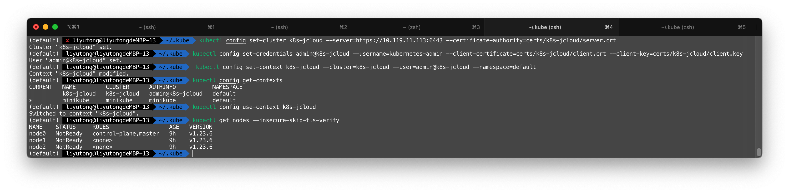
得到的配置文件大概是这个样子
apiVersion: v1
clusters:
- cluster:
insecure-skip-tls-verify: true
server: https://10.119.11.113:6443
name: k8s-jcloud
contexts:
- context:
cluster: k8s-jcloud
namespace: default
user: admin@k8s-jcloud
name: k8s-jcloud
current-context: k8s-jcloud
kind: Config
preferences: {}
users:
- name: admin@k8s-jcloud
user:
client-certificate: certs/k8s-jcloud/client.crt
client-key: certs/k8s-jcloud/client.key
username: kubernetes-admin
这时候就可以用kubectl config get-contexts查看所有的contexts，并用kubectl config use-context k8s-jcloud命令选中改context
Warning
如果用kubeadm初始化时，--apiserver-advertise-address没有设置正确，则需要使用--insecure-skip-tls-verify运行kubectl命令，或者设置跳过证书检查
实践 - 新建用户并配置权限
创建新用户其实就是用Root CA签发新的证书。创建一个create_user.sh，内容如下
ROOT_CA_CRT=/etc/kubernetes/pki/ca.crt
ROOT_CA_KEY=/etc/kubernetes/pki/ca.key
if [ $# -lt 1 ]; then
echo "User name not provided"; exit;
fi
USER=$1
ORG=ice6413p
CN=$1
EXPIRATION=3650
openssl genrsa -out $USER.key 2048
openssl req -new -key $USER.key -out $USER.csr -subj "/O=$ORG/CN=$CN"
openssl x509 -req -in $USER.csr -CA $ROOT_CA_CRT -CAkey $ROOT_CA_KEY -CAcreateserial \
-out $USER.crt -days $EXPIRATION
运行该脚本，将产生test.csr，test.key，test.crt三个文件，我们需要test.key, test.crt用于客户端认证
使用kubectl config工具，或直接编辑~/.kube/config文件，新增该用户和对应的Context。方法如上节所属
- context:
cluster: k8s-jcloud
namespace: default
user: test@k8s-jcloud
name: k8s-jcloud-test
...
users:
- name: test@k8s-jcloud
user:
client-certificate: credentials/test/test.crt
client-key: credentials/test/test.key
username: test
...
Warning
证书一旦发布则无法吊销，该用户将在证书有效期内获得访问集群的权限，因此需要加上额外的限制（e.g. RBAC权限管理）
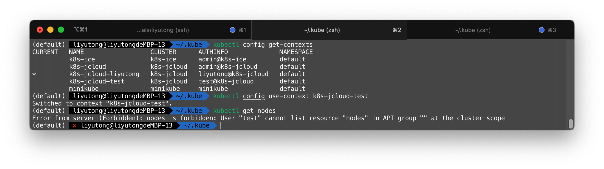
此时test用户没有任何权限。一个最常见的做法是使用RBAC鉴权。以下命令将赋予一个test用户节点的管理员权限
[node0] kubectl create clusterrolebinding test-cluster-admin-binding --clusterrole=cluster-admin --user=test
Note
liyutong-cluster-admin-binding会被创建在rbac.authorization.k8s.io空间下，需要全局唯一
以下命令将赋予test用户user.test空间下所有资源的权限
[node0] kubectl create rolebinding test-admin-binding --clusterrole=admin --user=test --namespace=user.test
参考云容器引擎
检查证书并续签
k8s 版本迭代很快，官方推荐一年之内至少用 kubeadm 更新一次 Kubernetes 版本，这时候会自动更新证书。
查看根 CA 证书的有效期
查看当前证书有效期
重新签发证书
查看当前证书有效期
重新签发证书:续签全部证书
小结
一旦配置好集群后，我们就为实验用的用户生成证书，并下载到本地。这时候，我们就可以从任何一台能够与控制平面所在节点通讯的计算机控制集群，而不必登陆到该节点。因此在下文中所有的kubectl命令都可以看作是在一台任意的配置了kubectl的节点的机器上执行的。
Cluster & Nodes
Node
使用kubectl get可以查看集群的各类，使用kubectl describe可以进一步详查
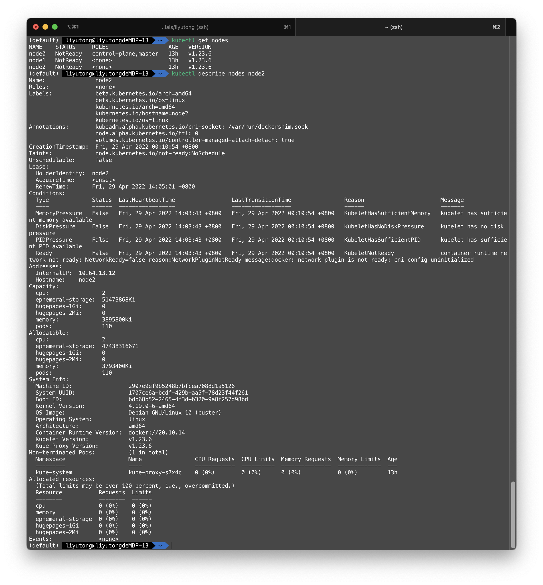
Note
nodes 不属于namespace（可以用kubectl api-resources --namespaced=false命令查看不属于namespace管辖的资源
Taint & Toleration
Taint 的语法是
Note
当Node被打上Taint后，因为Pod追求“完美”，正常的Pod是不会被调度至有瑕疵的节点。如果Pod比较大度，可以容忍这些Taint，那么是可以调度到这个节点的。这也就是为什么只有key=value的pod才会调度到上面
Tip
kubectl taint node [node] key=value[effect]-可以用来移除对应的污点
给节点node1打上污点，并查看污点
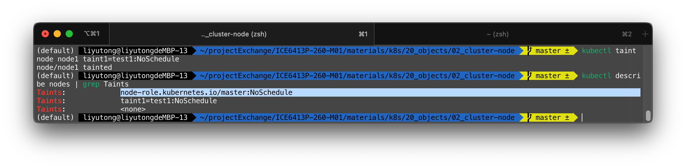
Note
注意这里默认的Taint
删除污点
我们部署服务
apiVersion: v1
kind: Pod
metadata:
name: nginx-taint1 # 可以自定义
labels:
app: nginx-taint1 # 可以自定义
spec:
containers:
- name: nginx-taint1 # 可以自定义
image: nginx
resources:
limits:
cpu: 30m
memory: 20Mi
requests:
cpu: 20m
memory: 10Mi
tolerations: # 自定义调度规则容忍
- key: taint1 # 容忍taint1:test2的瑕疵
value: test2
operator: Equal
effect: NoSchedule
Note
K8S中CPU使用量的计量周期为100ms，30m即30ms/100ms，也就是30%
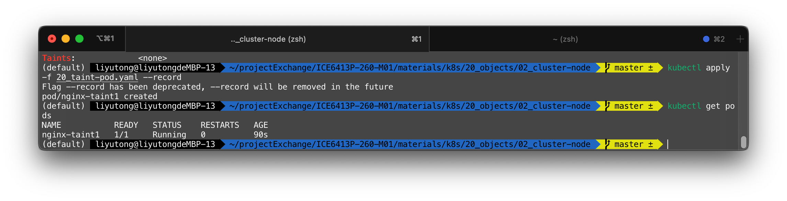
kubectl cordon node1 # 节点进入维护模式
kubectl get nodes # 查看Node
kubectl drain node1 --ignore-daemonsets # 平滑迁移pod，忽略daemonsets管理的pod
kubectl uncordon node1 # 取消节点的维护模式
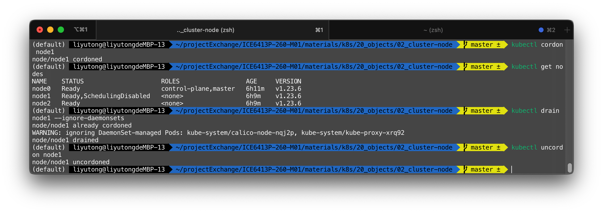
可以看到，进入维护模式的节点，调度将停止
Note
--ignore-daemonsets 是为了防止和网络有关的Pod被调走
小结一下，节点维护的方法是，先将其置为维护模式停止调度，然后将节点上的Pod迁移到其他节点，随后就可以进行维护了。一旦维护结束，就取消节点的维护模式
Label
为get pods操作增加Label显示
为$POD_NAME的Pod添加{key: value}的Label
为$POD_NAME的Pod删除名称为key的Label
Note
kubectl label node $NODE_NAME key=value 可以对node做类似操作
使用-l key=value参数可以在get pods的时候过滤pods
kubectl get pods --show-labels
kubectl label pod nginx-taint1 role=test
kubectl get pods -l role=test
kubectl label pod nginx-taint1 role-
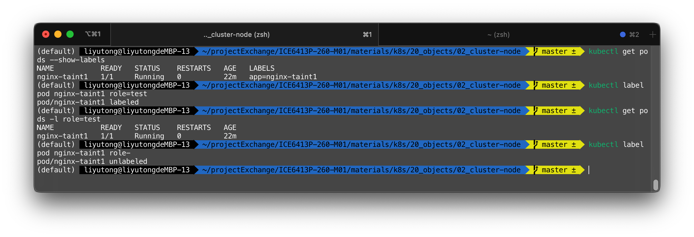
Namespaces
我们验证namespace操作命令
kubectl get namespaces
kubectl -n kube-system get pods
kubectl create namespaces test-ns
kubectl get namespaces
kubeclt delete namespaces test-ns
Note
也可以用kubectl apply -f namespace.yaml应用namespace设置
Monitor
和top 命令一样，kubectl可以监控节点的状态
kubectl top nodekubectl -n kube-system top pod添加-n参数可以限定作用域
Warning
如果kubeadm部署，则非常可能需要手动安装metrics-server
修改其中的镜像为bitnami/metrics-server，注意tag的不同apiVersion: apps/v1
kind: Deployment
metadata:
spec:
template:
spec:
containers:
- args:
#image: k8s.gcr.io/metrics-server/metrics-server:v0.6.1
image: bitnami/metrics-server:0.6.1
部署metrics-server
监控kubectl get pods --all-namespaces，直到metrics-server-xxxxxxxxx-xxxxPod运行成功
Tip
如果忘记修改镜像来源，第一次创建的Pod永远失败，就使用kubectl delete deployment metrics-server -n kube-system删除这次失败的部署，然后修改镜像源重新部署。
Note
如果遇到metrics-server容器Running而无法Ready，容器日志中出现X509错误，则需要启用serverTLSBootstrap，参考部署集群.
也可以在template.containers.args下添加--kubelet-insecure-tls参数忽略证书错误
总的来说，metrics-server 的正常运行依赖于：
- Master节点和Metrics Server Pod能够互相联通（kubeadm默认满足）
- APIServer 启用聚合支持（kubeadm默认启用）
- 证书通过CA认证（开启serverTLSBootstrap）
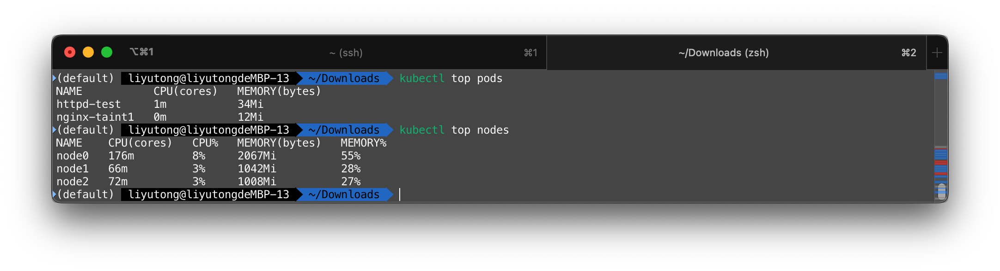
Log
使用kubectl logs可以查看某一个resource的log
kubectl logs $RESOURCE_ID: 查看默认命名空间（default）下的$RESOURCE_ID的资源的logkubectl -n $NS logs $RESOURCE_ID: 查看$NS命名空间下的$RESOURCE_ID的资源的logkubectl get event获得K8S事件
Tip
kubectl get all可以获取命名空间下所有resource，默认是default命名空间下
查看一个Pod的日志
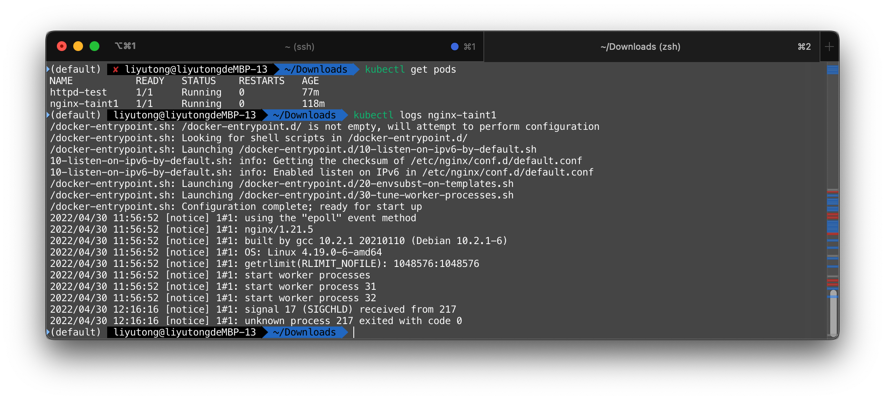
查看集群发生的事件
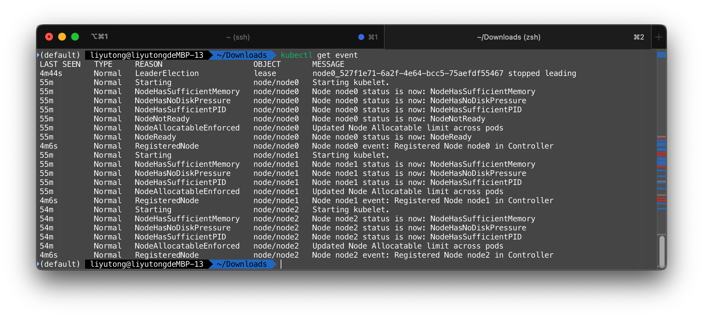
Pod
本章节主要是完成各种Pod部署并查看不同配置文件的内容对Pod/K8S集群的影响
Pod with 1 Container
部署提供的10_pod1.yaml，该文件描述了一个名为pod1的busybox服务的部署。busybox是一个linux工具集合。它提供了300多个常用的linux命令，并采取复用代码的形式节约了很多空间。容器的入口是运行了/bin/sh -c echo pod1 is running!这条语句，因此容器将很快退出。但是由于其restartPolicy=Always，容器将反复重启。
apiVersion: v1
kind: Pod
metadata:
name: pod1
labels:
app: pod1
spec:
restartPolicy: Always
containers:
- name: ct-busybox
image: busybox:latest
imagePullPolicy: IfNotPresent
command: ['/bin/sh', '-c', 'echo pod1 is running!']
kubectl apply -f 10_pod1.yaml
kubectl logs pod1 # show the echo message
kubectl get pods
kubectl describe pod pod1 # Back-off restarting failed containe
我们观察到，Pod状态会从 Completed 变为 CrashLoopBackOff，原因是 pod 结束后后，因为 RestartPolicy 为 Always，pod重新启动后再次退出，循环往复。
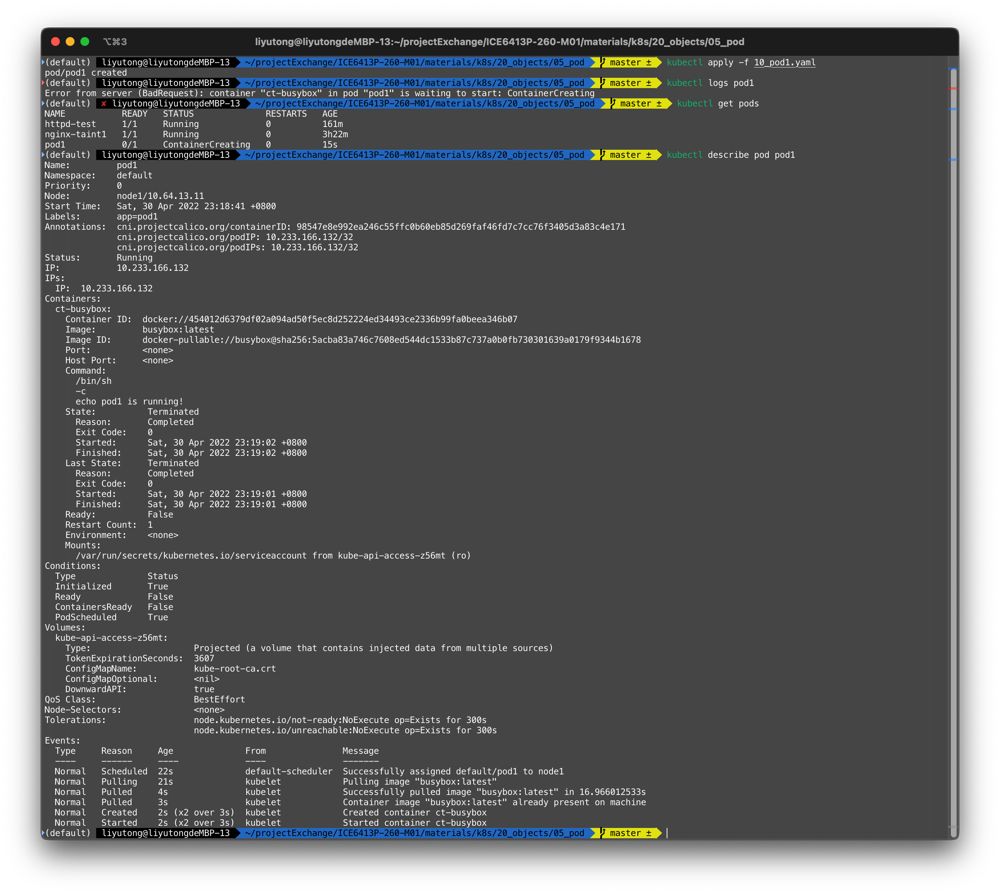
11_pod1.yaml 中，restartPolicy被设为了OnFailure
kubectl apply -f 11_pod1.yaml
kubectl logs pod1 # show the echo message
kubectl get pods # 状态会为 Completed
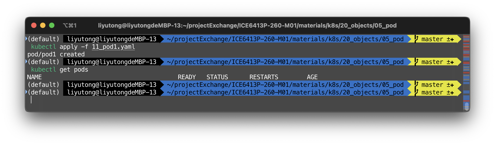
容器正常退出，因此不会被重启
Note
如果遇到报错"pod updates may not change fields other than..."错误，则需要删除上一步创建的pod
12_pod1.yaml 定义了command: ['/bin/sh', '-c', 'echo pod1 is running! & sleep 3000']，即先打印一句"pod1 is running!"，然后休眠3000秒，在此期间，容器将持续运行但不占用CPU
kubectl apply -f 12_pod1.yaml
kubectl get pods # 状态会为 Running
kubectl exec pod1 -- env # 打印环境变量，这是busybox提供的工具
kubectl exec -it pod1 -- /bin/sh
按下Ctrl-D退出/bin/sh
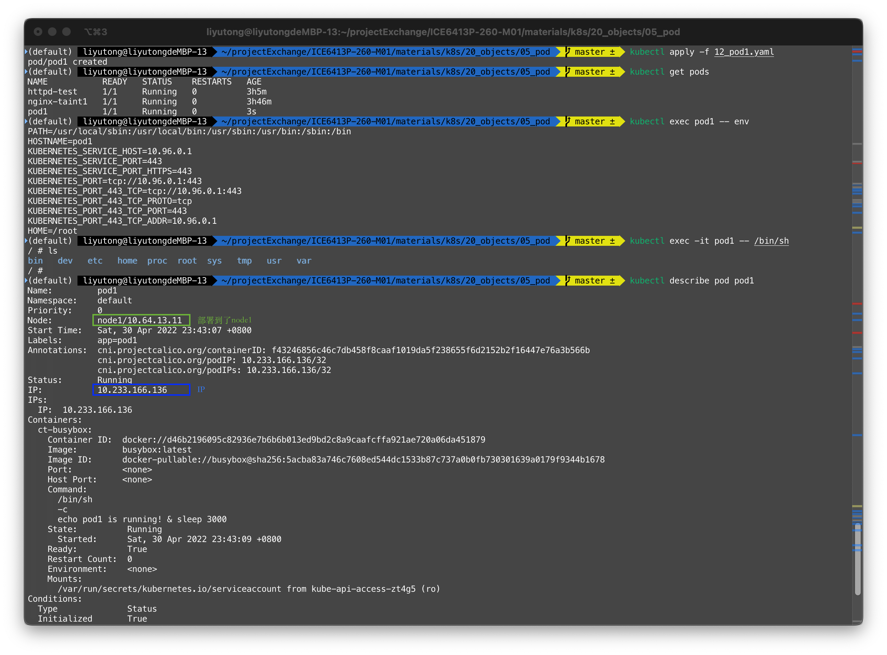
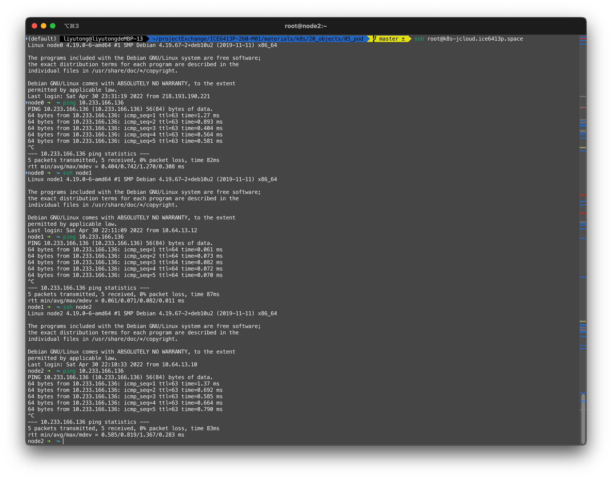
可以看到，由于calico插件的作用，各个node都可以ping通该Pod。其中node1的延迟最小且稳定。
Note
$POD1_IP 为kubectl describe pod pod1得到的Pod IP地址
Note
如果节点没有配置NodePort/LoadBalancer而只有ClusterIP，那么是无法从集群外访问Pod的。这时候就必须登陆到集群才能Ping该Pod
Note
由于该Pod执行的命令是sleep 3000，无法响应K8S给出的信号从而优雅地退出，因此删除容器将会等待较长时间
Pod with 2 Containers and shared EmptyDir
该文件增加了一个nginx服务。两个服务通过volumeMounts挂载名称为name的数据卷。这个卷是空的
apiVersion: v1
kind: Pod
metadata:
name: pod2
spec:
volumes:
- name: data
emptyDir: {}
restartPolicy: Never
containers:
- name: ct-nginx
image: nginx:latest
imagePullPolicy: IfNotPresent
volumeMounts:
- name: data
mountPath: /usr/share/nginx/html
- name: ct-busybox
image: busybox:latest
imagePullPolicy: IfNotPresent
volumeMounts:
- name: data
mountPath: /data
command: ['/bin/sh', '-c', 'echo Hello from the pod2/ct-busybox > /data/index.html && sleep 3000']
kubectl create -f 13_pod2.yaml
kubectl exec -it pod2 -c ct-nginx -- /bin/bash
[ct-nginx] $ apt update && apt install curl && curl localhost
# get the hello message
kubectl get pods -o wide | grep pod2 # get IP address
[node0] $ curl $POD2_IP # get the hello message
Note
$POD2_IP 需要修改成Pod的实际IP
Tip
create -f等价于apply -f。kubectl create命令可创建新资源。 因此，如果再次运行该命令，则会抛出错误，因为资源名称在名称空间中应该是唯一的。kubectl apply命令将配置应用于资源。 如果资源不在那里，那么它将被创建。 kubectl apply命令可以第二次运行.
我们接下来将修改网页的内容
kubectl exec -it pod2 -c ct-busybox -- /bin/sh
[ct-nginx] $ echo "Goodbye from the pod2" > /data/index.html
[node0] curl POD2_IP # get the new message
网页的内容发生了改变
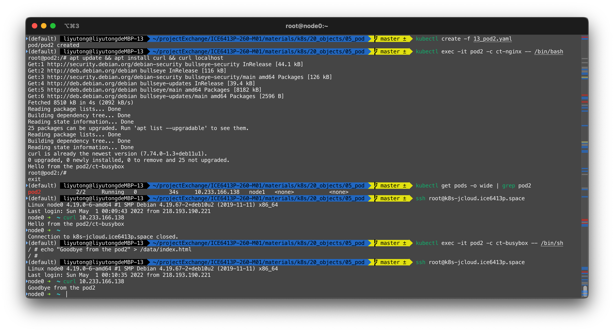
Pod with resource limitation
15_pod3.yaml启动了一个stress --vm 1 --vm-bytes 250M --vm-hang 1进程。--vm 1产生一个进程，才进程不断分配和释放内存，内存大小由--vm-bytes 250M定为250MB。--vm-hang 1指定每个消耗内存的进程在分配到内存后转入睡眠状态 1秒
这样的命令明显超出了配置文件中的限制，因此会被杀死.
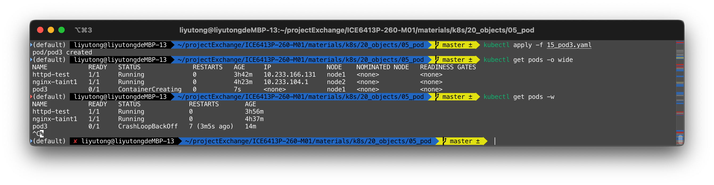
Pod with Liveness Check
这一系列实验测试了K8S提供的容器监控手段。
Liveness CMD Check
20_pod4-liveness-cmd.yaml定义了sh -c cat /tmp/healthy作为监控手段
我们发现 liveness-exec 的 RESTARTS 在 20 秒后由于检测到不健康一直在重启
 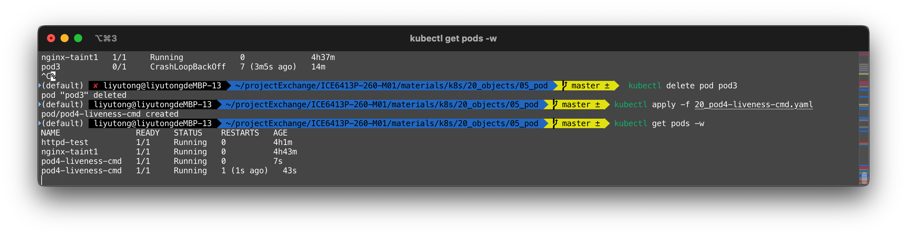
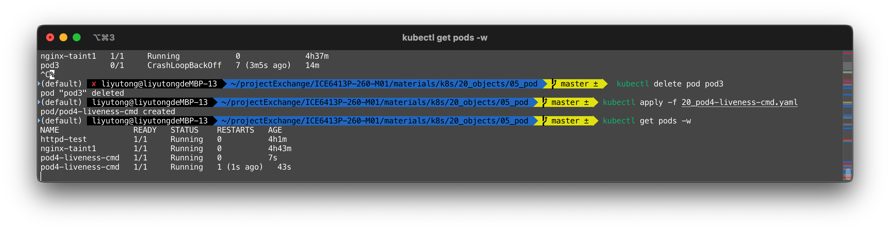
Note
kubectl get pods -w 相当于使用watch命令持续检测
容器的restart策略令其不断重启
kubectl delete pod pod4-liveness-cmd 可以删除该Pod
Liveness HTTP Check
21_pod5-liveness-http.yaml定义了POD_IP:8080/helthz作为监控手段，并且规定了httpHeader。initialDelaySeconds： 3表示第一次查询等待3秒，periodSeconds: 3表示每次查询间隔3s
k8s.gcr.io/liveness 镜像会使 /healthz 服务时好时坏。配置文件中的k8s.gcr.io/liveness镜像国内几乎无法下载，可以更改为registry.hub.docker.com/davidliyutong/liveness
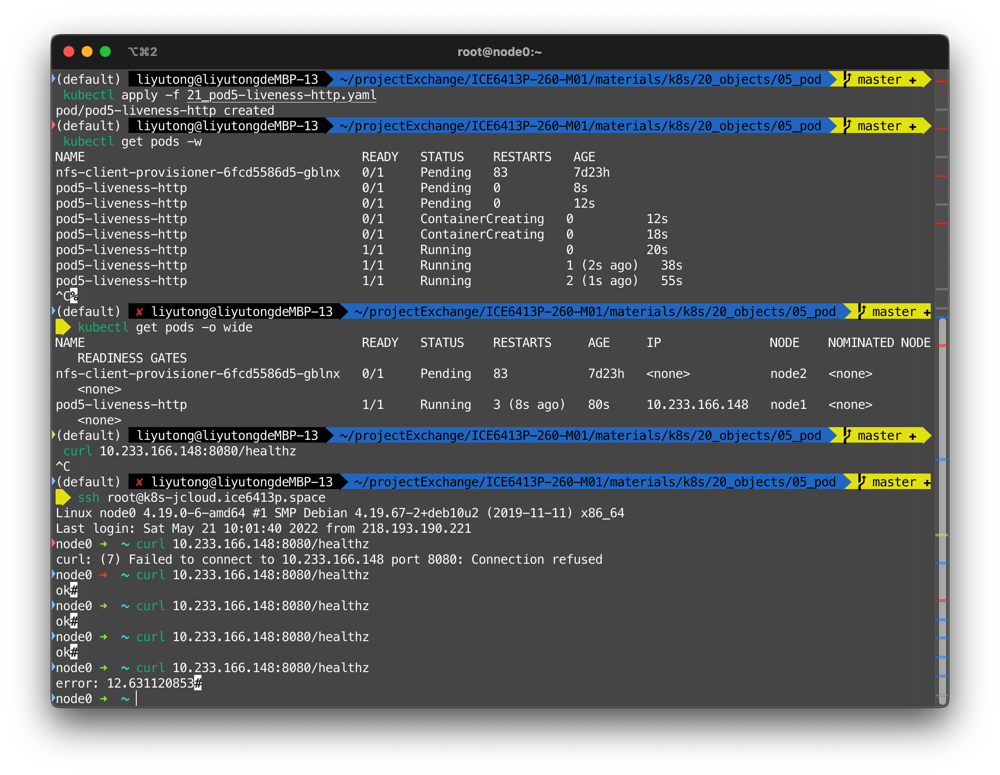
可以看到，pod不时重启，curl得到的内容时而OK时而错误
Note
- $POD_IP 要修改为可访问的IP
initialDelaySeconds要合理设置- metrics-server 就采取了这种方法通告自己存活
Liveness TCP Check
TCP 存活检查的实现，和HTTP检查大同小异
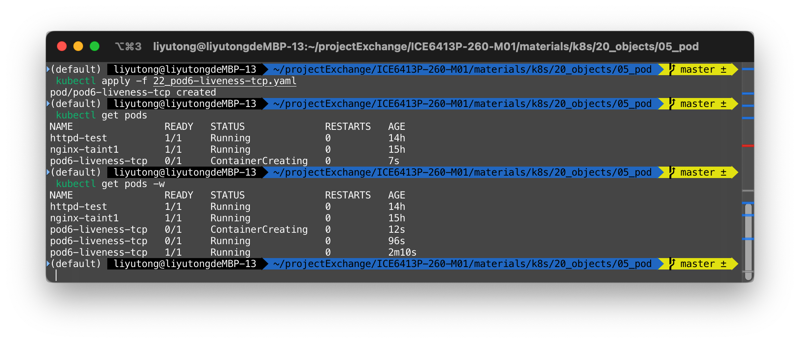
Pod with NodeSelector
30_pod7-nodeSelector.yaml中定义的Pod没什么特别的，只是多了nodeSelector.disktype: ssd这一键值对。因此K8S在调度过程中就会寻找包含{disktype: ssd}这一标签的节点
kubectl label nodes node1 disktype=ssd
kubectl get nodes node1 --show-labels
kubectl apply -f 30_pod7-nodeSelector.yaml
kubectl get pod -o wide
Node
node1需要替换成节点的名称- 可以用
kubectl label nodes node1 disktype-清除标签 - 可以用
kubectl label nodes node1 disktype=hdd --overwrite覆盖标签
Warning
如果没有节点有该标签，调度将会失败。Pod将会一直处于Pending的状态
如下图所示，由于没有节点有disktype=hdd标签，该Pod一直处于Pending状态
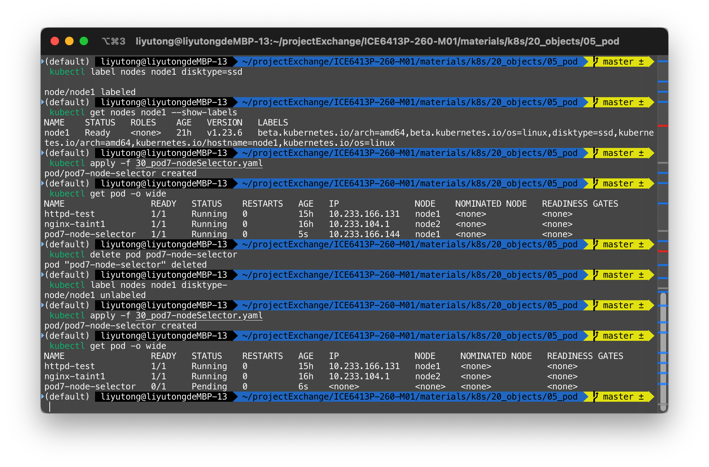
InitContainer
initContainers 可以启动一个容器在主容器前做初始化工作。该容器执行完工作后将会退出，而且不会触发K8S的容器失败重启机制
kubectl apply -f 40_pod8-initcontainer.yaml
# the init CT creates the file 'testfile'
kubectl exec pod8-initcontainer -- ls /storage/
# the testfile exists
Static Pod
kubelet会自动启动/etc/kubernetes/manifests/下配置文件定义的 static pod
[node0] $ mv 42_pod9-static.yaml /etc/kubernetes/manifests/
kubectl get pod
kubectl delete pod pod8-static
kubectl get pod # 看到有删除该 pod，但是不会生效
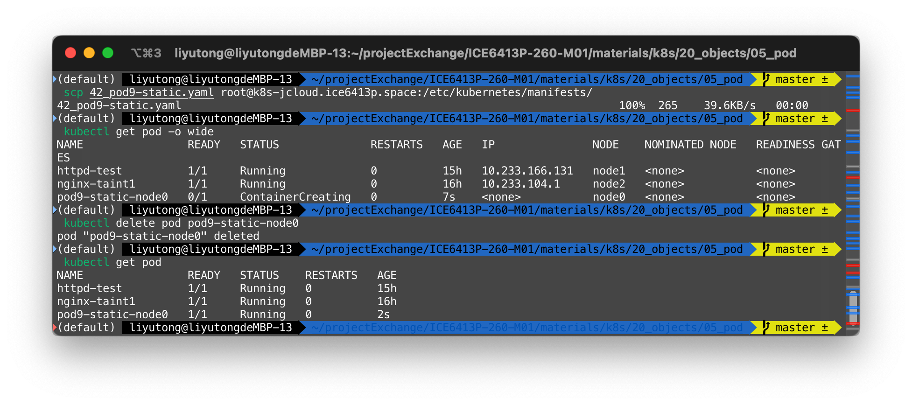
Note
设置stait pod的重点是将pod配置文件存放在控制平面节点的/etc/kubernetes/manifests/目录下。如果是远程访问节点，就需要将该文件通过scp等工具拷贝到相应目录：
Note
切不可删除/etc/kubernetes/manifests/目录来取消42_pod8-static.yaml配置文件的加载。这是因为该目录下还有很多其他关键的staitc pod
Workload
ReplicaSet
对10_replicaset1.yaml注解如下
apiVersion: apps/v1
kind: ReplicaSet
metadata:
name: replicaset1
labels:
label-rep: value-rep
spec:
replicas: 2 # 两个副本
selector: # 定义两个副本的策略的应用范围
matchLabels: # 使用matchLabel策略
label-pod: value-pod # 匹配spec.template.metadata.labbels
template:
metadata:
labels:
label-pod: value-pod # 和spec.selector.matchLabels保持一致
spec:
containers: # 创建了一个nginx容器
- name: nginx
image: nginx:1.9.0
imagePullPolicy: IfNotPresent
ports:
- containerPort: 80
kubectl apply -t 10_replicaset1.yaml # create replicaset
kubectl get replicasets # list replicasets
kubectl delete replicasets replicaset1 # delete replicaset
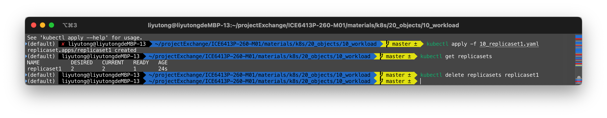
Tip
kubectl delete replicasets replicaset1或者kubectl delete -f 10_replicaset1.yaml可以撤销更改
对12_replicaset2-node-selector.yaml注解如下
apiVersion: apps/v1
kind: ReplicaSet
metadata:
...
spec:
...
template:
...
spec:
...
nodeSelector:
zone: xxx # 和之前的实验一样，限定这个ReplicaSet只选择带有zone=xxx标签的节点
kubectl label nodes $NODE_ID zone=xxx
kubectl apply -f 12_replicaset2-node-selector.yaml
kubectl label nodes $NODE_ID zone- # unlabel zone
kubectl label nodes $NODE_ID zone=yyy
kubectl delete -f 12_replicaset2-node-selector.yaml # re-deploy
kubectl apply -f 12_replicaset2-node-selector.yaml
# all the pods are pending since they cannot find a node
kubectl label nodes $NODE_ID zone- # unlabel zone
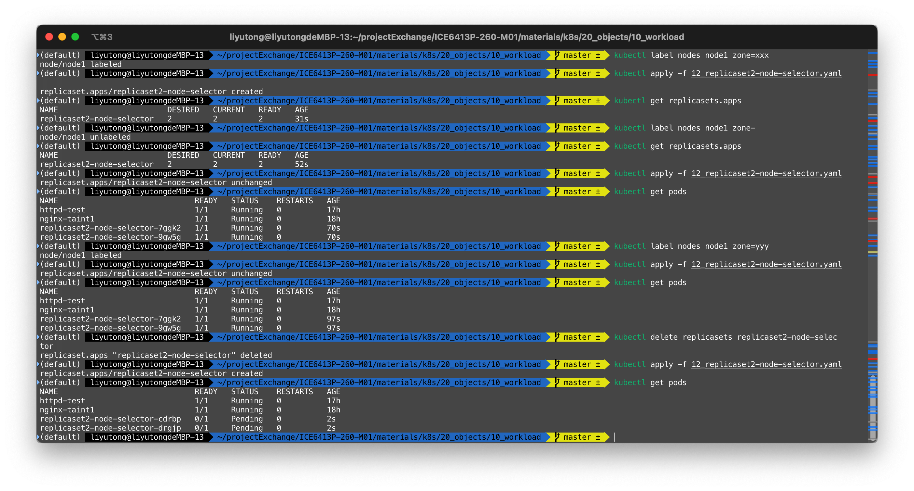
Note
调度完成后，删除或者修改标签，都不会使得已经调度的Node重新变为Pending。此时如果重新应用配置，kubectl将不会做出更改（因为配置文件没变）。只有删除配置文件后修改Label，再重新部署配置，Pod才会因为找不到合适的Node而变为Pending状态
Note
$NODE_ID要替换成集群中某一节点的实际ID
zone=xxx是一个标记node属于哪一个区的手段，对应12_replicaset2-node-selector.yaml中的spec.template.spec.nodeSelector
Deployment
by CMD
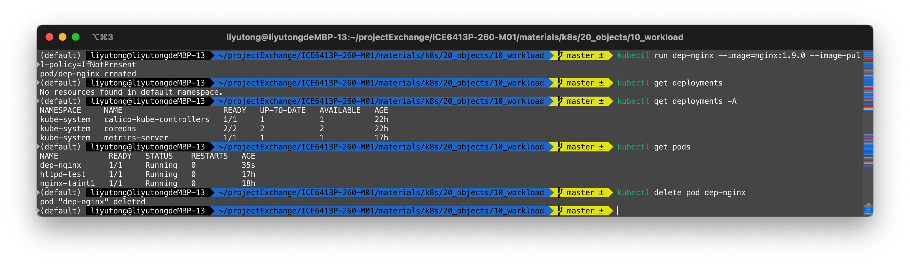
可以看到，kubectl run只是启动了一个Pod
Warning
K8S v1.18后，官方弃用了--replicas=2这一Flag，因此命令需要修改成
Scale & upgrade
kubectl apply -f 20_deployment1.yaml # create a deployment with 2 replicas
kubectl get deployment
kubectl get pods -o wide # get pod IP
[node0] $ curl 10.233.166.149 # check the Nginx server
Note
10.233.166.149为Pod的ClusterIP，需要登陆集群访问
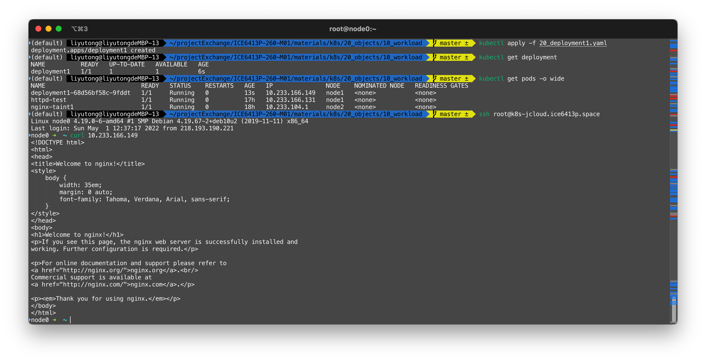
下列语句允许我们：
- 将该服务拓展到三个副本
- 升级服务的镜像（滚动更新）
- 对服务的部署进行回滚
kubectl scale deployment deployment1 --replicas=3 # scale out
kubectl set image deployment deployment1 nginx=nginx:stable --record
# upgrade image
kubectl get pods -o wide
kubectl rollout history deployment deployment1 # 查看history
kubectl rollout history deployment deployment1 --revision=1 # 查看版本1细节
kubectl rollout undo deployment deployment1 --to-revision=1 # 退回到版本1
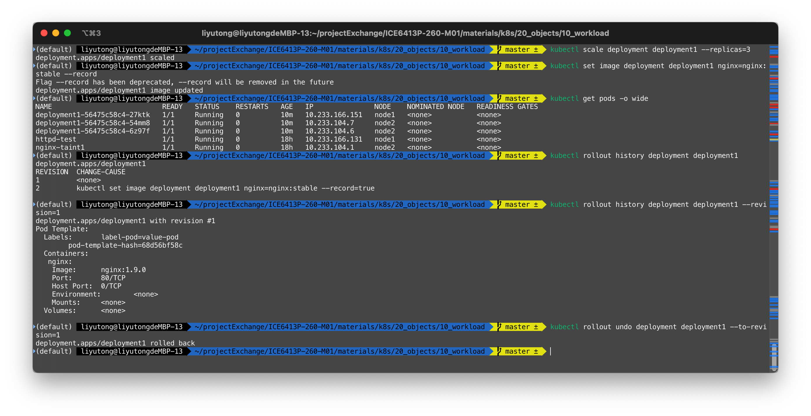
Note
v1.23.6客户端提示--record已经被弃用了，并且会被一种新的机制取代。详见PR#102873
deployment1为deployment的ID
Horizontal Pod Autoscaler(HPA)
Horizontal Pod Autoscaler(HPA) 是K8S的一种资源对象，能够根据某些指标对在statefulSet、replicaController、replicaSet等集合中的Pod数量进行动态伸缩，使运行在上面的服务对指标的变化有一定的自适应能力。
为了访问指标数据，需要安装metric-server，如果集群支持kubectl top命令，则该服务可能已经安装了
对22_deployment2-hpa.yaml解释如下：
apiVersion: v1
kind: Service
metadata:
name: deployment2-hpa-service
labels:
app: nginx
spec:
selector:
app: nginx
ports:
- port: 80
和普通的Deployment相比，不仅添加了CPU/内存的限制，还新增了一个Service资源，将Pod包装成了服务。这样一来kubectl autoscale就可以对其操作，使其根据CPU指标进行放缩
kubectl apply -f 22_deployment2-hpa.yaml
kubectl autoscale deployments deployment2-hpa --min=1 --max=5 --cpu-percent=10
kubectl get hpa
kubectl run -it --rm load-generator --image=busybox /bin/sh
[ct] $ while true; do wget -q -O- http://deployment2-hpa-service; done
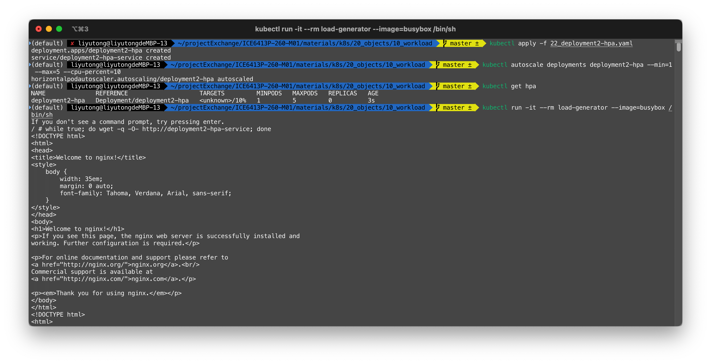
运行一段时间后，发现TARGET发生了变化
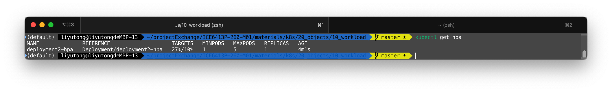
Tip
kubectl run --rm可以看做docker run在集群上的表现。kubectl --rm可以在命令结束后删除Pod，正如docker --rm在命令结束后删除容器一样
DaemonSet
DaemonSet保证每个节点上都有一个此类 Pod 运行。节点可能是所有集群节点也可能是通过 nodeSelector 选定的一些特定节点。典型的后台支撑型服务包括存储、日志和监控等在每个节点上支撑 K8s 集群运行的服务。
kubectl taint node node1 node-role.kubernetes.io/master=:NoSchedule
kubectl describe node node1 | grep Taints
kubectl apply -f 20_deployment1.yaml # pod不会调度到node1上
kubectl apply -f 24_daemonset.yaml # pod可以调度到所有节点，忽略taint
kubectl get pods -o wide
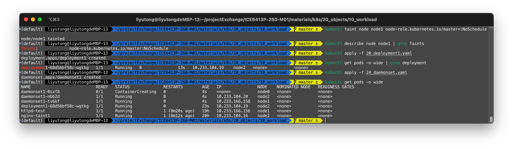
Job
Job 管理的 Pod根据用户的设置把任务成功完成就自动退出了，而长期伺服业务在用户不停止的情况下永远运行。
Lab - Simple Job
kubectl apply -f 30_job1.yaml
kubectl get jobs
kubectl get pods
kubectl logs job1-xxxx
kubectl apply -f 31_job2.yaml
kubectl get jobs
kubectl get pods
kubectl logs job2-xxxx
kubectl delete jobs --all
kubectl get jobs
kubectl get pods
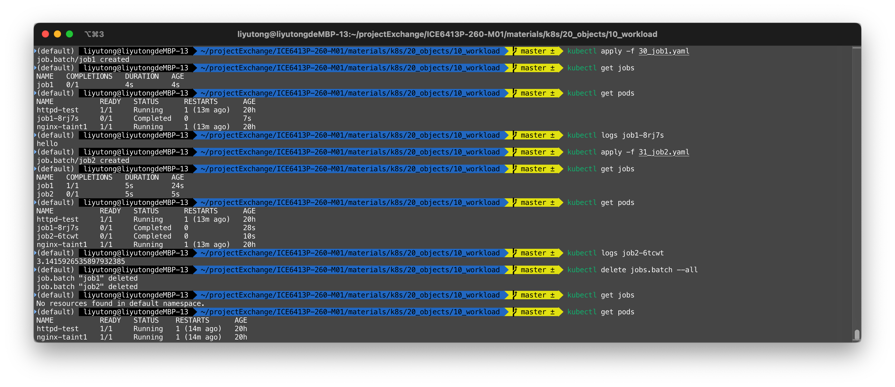
Note
job1-xxxx需要替换为为具体的Job ID
kubectl delete jobs.batch --all可以删除所有的Jobs
Lab - Completion Job
Job 会启动多个 pod 完成completion
- completions：总共需要执行 job 的次数
- parallelism：并行执行 job 数
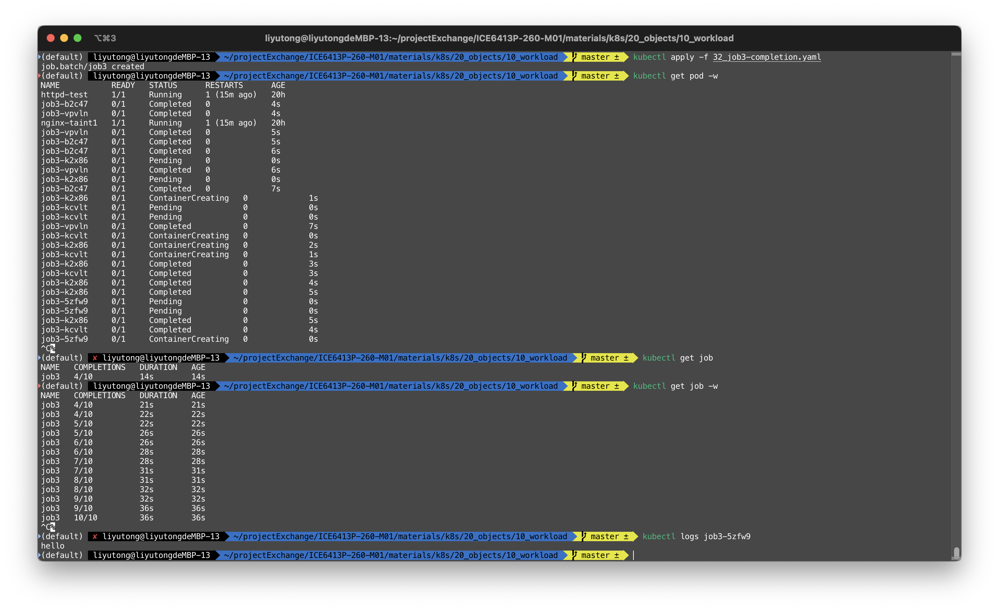
Lab - Cronjob
CronJob 即定时任务，就类似于 Linux 系统的 crontab，在指定的时间周期运行指定的任务。
Note
1.21版本以前使用 CronJob 需要开启batch/v2alpha1 API。1.21版本以后，CronJob被纳入了batch/v1中
.spec.schedule指定任务运行周期，格式同Cron 分 时 日 月 周.spec.jobTemplate指定需要运行的任务，格式同Job.spec.startingDeadlineSeconds指定任务开始的截止期限.spec.concurrencyPolicy指定任务的并发策略，支持Allow、Forbid和Replace三个选项
kubectl apply -f 34_cronjob1.yaml
kubectl get cronjobs
kubectl get pod -w
kubectl logs cronjob1-xxxxxxxx-yyyyy
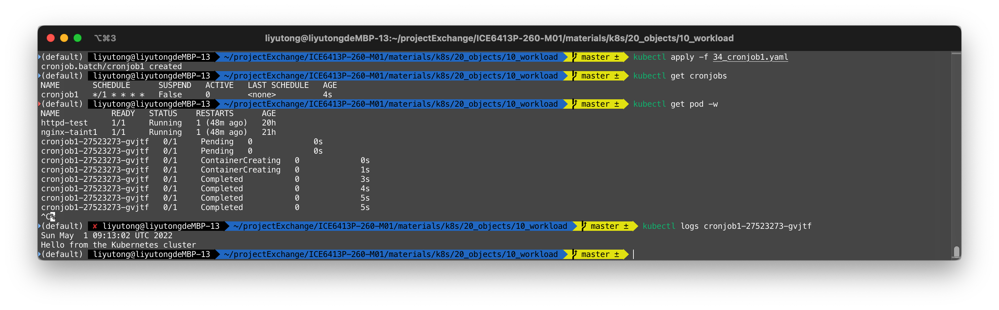
Service
Service 的主要作用是作为 Pod 的代理入口，从而代替Pod对外暴露一个固定的网络地址
K8S集群Service类型有多种
- ClusterIP 分配一个集群内IP（默认）
- NodePort 绑定到一个Node的IP
- ExternalName 使用外部DNS
- LoadBalancer 使用外部负载均衡
NodePort
一些解读：
apiVersion: v1
kind: Service
metadata:
name: service1-node-port
spec:
selector:
app: nginx # 选择了上文定义的带有app=nginx标签的Pod
type: NodePort # 指定Type
ports:
- protocol: TCP # 转发TCP端口
targetPort: 80 # Pod内的80
port: 8888 # Node 的 8888
nodePort: 30888 # 集群的出口的30888
Note
为什么需要selector：因为service可以和pod分开配置。当分开配置的时候，就非常有必要制定service作用的Pod了。而这是通过selector完成的
kubectl apply -f 10_service1-nodePort.yaml
kubectl get svc -o wide # get the random node_port
curl k8s-jcloud.ice6413p.space:30888 # it works, even with Docker-for-Desktop
Note
k8s-jcloud.ice6413p.space解析到了集群节点的外部IP上
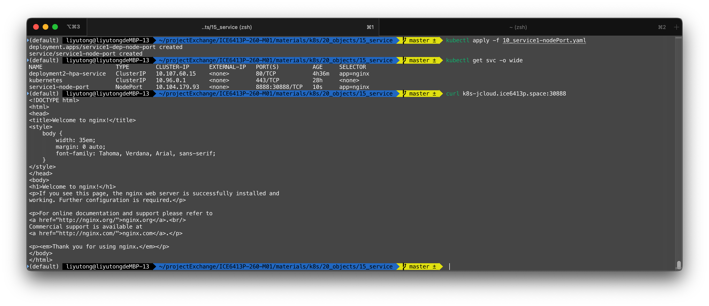
ClusterIP
...
apiVersion: v1
kind: Service
metadata:
name: service2-cluster-ip
spec:
selector:
app: nginx
type: ClusterIP
ports:
- protocol: TCP
targetPort: 80
port: 8889
该配置文件没有在集群IP上创建端口
kubectl apply -f 15_service2-clusterIP.yaml
kubectl get svc -o wide # get the clusterIP and port of the service
kubectl get pods -o wide
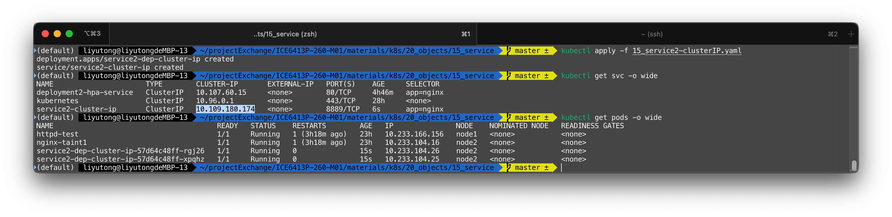
可以看到该服务被分配了10.109.180.174的ServiceIP，并且被调度到了node2上。使用curl/ping测试可以发现
curl 10.119.11.125:8889
curl 10.119.11.103:8889
curl 10.119.11.113:8889
[node0] $ curl clusterIP:clusterPort
[node0] $ curl node2:80
[node0] $ curl node2:8889
[node0] $ ping podIP
[node0] $ ping serviceIP(clusterIP)
Note
clusterIP
10.119.11.125、 10.119.11.103、 10.119.11.113为集群的外部IP地址
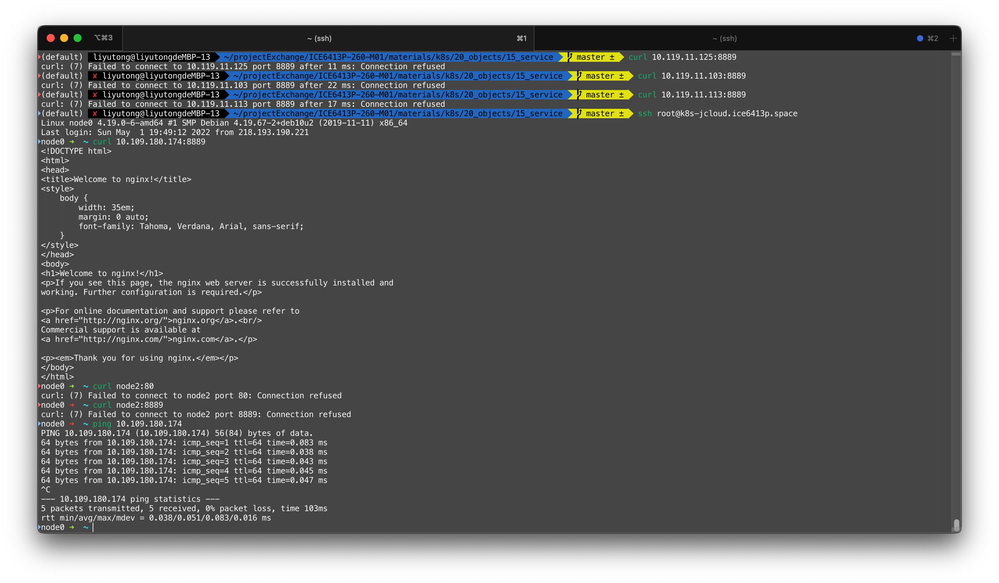
- 该服务的ClusterIP/ServiceIP只能在集群内部访问
- ClusterIP不同于NodeIP，并没有绑定到Node上，不能通过node的主机名访问
- 可以ping通ClusterIP（一般是不行的）
- 存在名为kubernetes的service，提供了10.96.0.1集群的DNS
总结一下
- Cluster IP只能和K8S SVC这个对象绑定组成一个具体的通信接口。单独的Cluster IP不具备通信的基础，并且他们属于Kubernetes集群这样一个封闭的空间。
- 如果K8S使用的是iptables，Cluster IP无法被ping，他没有一个“实体网络对象”来响应。但是如果K8S使用了IPVS，则该IP可以被ping，因为IPVS创建了一个虚拟的网卡。
- 通过Cluster IP，不同SVC下的Pod节点在K8S集群间可以相互访问。
Expose CMD
kubectl apply -f 20_service3-pod-cmd.yaml
kubectl expose pod pod-service3 --type=NodePort --target-port=80 --port=8888
Note
kubectl expose手动暴露了一个已经部署的Pod，类型是NodePort
我们试图用curl访问该服务，但是失败了
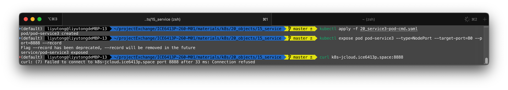
这是因为我们没有在expose命令中指定--node-port，因此K8S在node上随机选择了端口。我们使用kubectl get svc -o wide 查看详情
$ kubectl get svc -o wide
NAME TYPE CLUSTER-IP EXTERNAL-IP PORT(S) AGE SELECTOR
kubernetes ClusterIP 10.96.0.1 <none> 443/TCP 28h <none>
pod-service3 NodePort 10.104.185.204 <none> 8888:31297/TCP 6m50s app=nginx
可以看到该服务pod-service3被转发到了node2的31297端口。测试之
Note
10.119.11.125是node2的IP
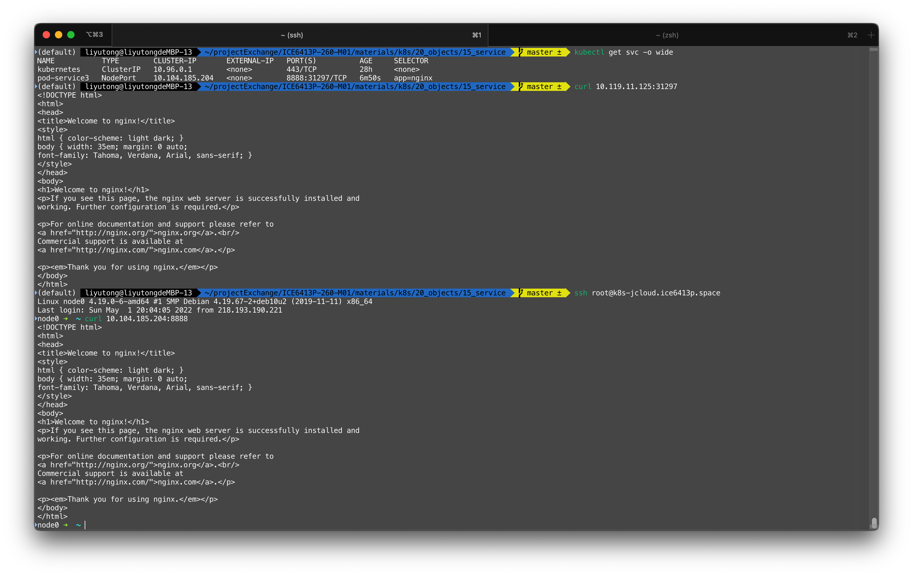
发现其正常工作
Tip
通过命令行指定--nodePort是很麻烦的，需要用到--overrides参数
Health Check
如果没有 health check，有些服务会报错
kubectl apply -f 30_service4-health-check.yaml
kubectl expose deployment service4-dep-health-check
kubectl get svc
[node0] $ curl 10.100.97.250:8080 # doesn't work with Docker-for-Desktop
kubectl get pods
Note
10.100.97.250 为clusterIP
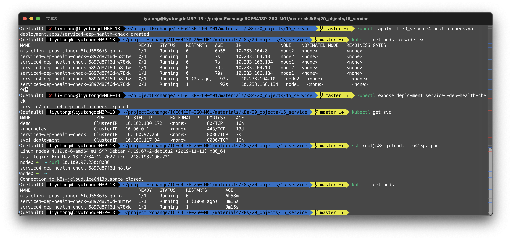
External Service
Endpoint 可以将Service和一个集群外的服务链接。
kind: Service
apiVersion: v1
metadata:
name: service5-endpoints
spec:
ports:
- protocol: TCP
targetPort: 30888
port: 80
Note
我们没有指定该Service的type，因此创建的是ClusterIP服务
我们没有指定该Service的selector，因此该Service只能指向外部服务
apiVersion: v1
kind: Endpoints
metadata:
name: service5-endpoints # should be the same as the service name
subsets:
- addresses:
- ip: 10.64.13.10 # Node0的IP
ports:
- port: 8000
官方文档的说法是，Endpoint在一下几种情况下发挥作用：
- 希望在生产环境中使用外部的数据库集群，但测试环境使用自己的数据库。
- 希望服务指向另一个 名字空间（Namespace） 中或其它集群中的服务。
- 你正在将工作负载迁移到 Kubernetes。 在评估该方法时，你仅在 Kubernetes 中运行一部分后端。
为了达到这几个目的，我们可以：
- 创建一个抽象的Service，约定该Service提供服务的IP和端口（clusterIP:clusterPort），供前端访问。
- 创建一个
Endpoint，将这个Service转发到其他应用上去。通过修改Endpoint，我们可以更换这个被转发的应用。只需要修改Endpoint就可以从测试阶段转移到生产阶段，而无需修改Service。
自然的，Endpoint需要和Service建立联系。因此他们的metadata.name必须一致。我们可以发现，Endpoint处理的是服务的抽象和接口
Note
Endpoint 中的name要和Service中的一样
由于我们是多节点的K8S集群，因此需要修改41_endpoints.yaml中的地址（一个有着多节点集群的本地回环地址是不明确的），填写一个确定的服务的IP地址。这个IP地址可以是一个ClusterIP服务的地址，也可以是一个NodePort服务的地址，甚至是集群外的地址。这里我们选择在node0（IP:10.64.13.10)）上启动一个python web server
kubectl apply -f 40_service5-endpoints.yaml
kubectl apply -f 41_endpoints.yaml
kubectl get endpoints # list
kubectl describe endpoints service5-endpoints # ep use the same name as svc
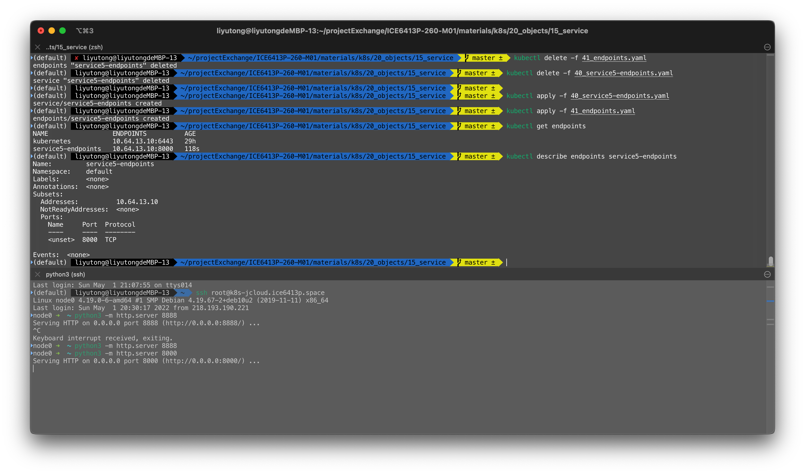
我们可以查看服务情况
$ kubectl get svc
NAME TYPE CLUSTER-IP EXTERNAL-IP PORT(S) AGE
kubernetes ClusterIP 10.96.0.1 <none> 443/TCP 30h
service5-endpoints ClusterIP 10.103.23.79 <none> 80/TCP 5m48s
service5-endpoints的ClusterIP为10.103.23.79，登陆集群的节点，然后测试该服务
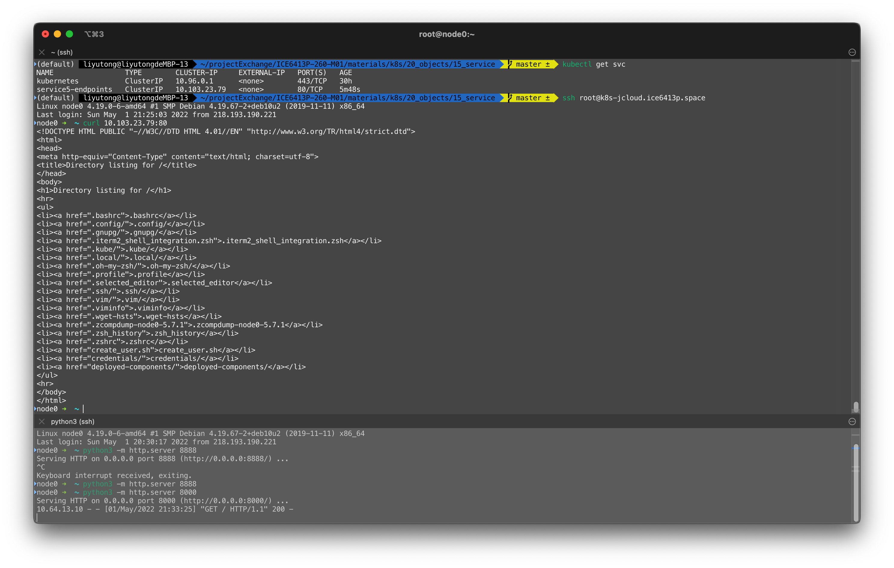
可以看到，我们为运行在10.64.13.10:8000上的python web server创建了10.103.23.79:80接口。在工程实践时，我们可以很快的设定一个Service的接口，然后分发给前端团队。他们可以在此基础上开发前端应用。
Headless Service
有时不需要或不想要负载均衡，以及单独的 Service IP。 遇到这种情况，可以通过指定 Cluster IP（spec.clusterIP）的值为 "None" 来创建 Headless Service。客户端通过查询集群的DNS（默认是10.96.0.10）确定Pod的IP，而不分配服务IP。
Note
这种Service依赖Label Selector来选择容器
观察配置文件。该文件定义了一个service，它将选择拥有k8s-app=headless-nginx的Pod。它还定义了一个Deployment，该Deployment将产生一个拥有两个副本的Nginx服务
apiVersion: v1
kind: Service
metadata:
name: svc-headless
spec:
selector: # 匹配 spec.template.metadata
k8s-app: headless-nginx
ports:
- port: 80 # 代理端口
clusterIP: None # 不分配clusterIP
---
apiVersion: apps/v1
kind: Deployment
metadata:
name: svc-headless
spec:
replicas: 2 # 两个副本
selector:
matchLabels: # 匹配 spec.template.metadata
k8s-app: headless-nginx
template:
metadata:
labels:
k8s-app: headless-nginx # 匹配 spec.selector.matchLabels
spec:
containers: # 启动了一个ngixn容器
- name: nginx
image: nginx
imagePullPolicy: IfNotPresent
ports:
- containerPort: 80
resources:
limits:
memory: "200Mi"
cpu: "500m"
应用该配置文件。我们可以看到，K8S为该Service创建了两个Endpoint，分别指向两个副本
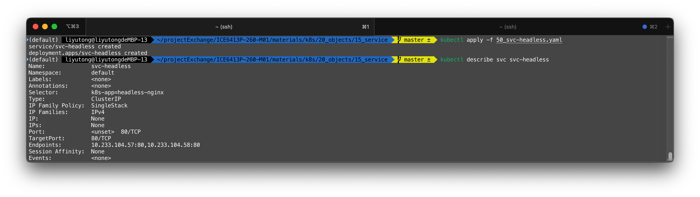
该Service将在K8S集群的DNS中产生一条新的解析svc-headless.default.svc.cluster.local。我们可以用nslookup工具查询该名称在K8S的DNS服务器（10.96.0.10）的解析结果
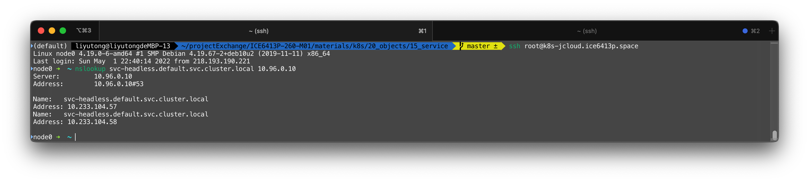
可以看到DNS服务返回了两个IP地址
Storage
一些名词的解释
- PersistentVolume（PV）: 持久卷
- PersistentVolumeClaim（PVC）: 持久化卷声明
etcd-based Storage
主要有两种基于ETCD的存储
- ConfigMap，保存配置文件等非敏感信息
- Secret，保存敏感信息
ConfigMap
ConfigMap is an API object used to store non-confidential data in key-value pairs
ConfigMap 是一个持久化的KV数据库，用来保存非敏感信息。Pod可以讲ConfigMap用于环境变量、命令行参数，也可以当作卷中的一个配置文件
创建ConfigMap的初中时讲配置数据和程序代码分开存放
Note
ConfigMap保存的数据量不能超过1MiB
有两种使用ConfigMap的方法
- 变量 (key-value): 如果挂载ConfigMap，则卷中会多出以key为名称的文件，内容是value
- 文件: ConfigMap显示成一个完整的文件
Tip
ConfigMap 常用cm代替
实验
-
从yaml创建ConfigMap。首先是对
10_cm1-pod-env.yaml的一些解读10_cm1-pod-env.yamlapiVersion: v1 kind: ConfigMap metadata: name: cm1 # 名称，独一无二的 data: special.how: very special.type: charm --- apiVersion: v1 kind: Pod metadata: name: cm1-pod-env spec: restartPolicy: Never containers: - name: ct-debian image: debian:latest command: [ "/bin/sh", "-c", "env && sleep 3000" ] # 模拟一个持续运行的服务 env: # 设定容器的环境变量 - name: SPECIAL_LEVEL_KEY # 环境变量的名称 valueFrom: # 值的来源 configMapKeyRef: name: cm1 # 和ConfigMap的名字一样 key: special.how # ConfigMap对应的键值 - name: SPECIAL_TYPE_KEY valueFrom: configMapKeyRef: name: cm1 key: special.typekubectl apply -f 10_cm1-pod-env.yaml kubectl exec cm1-pod-env -- env # display the env variables kubectl delete -f 10_cm1-pod-env.yaml # 删除部署的Pod和ConfigMap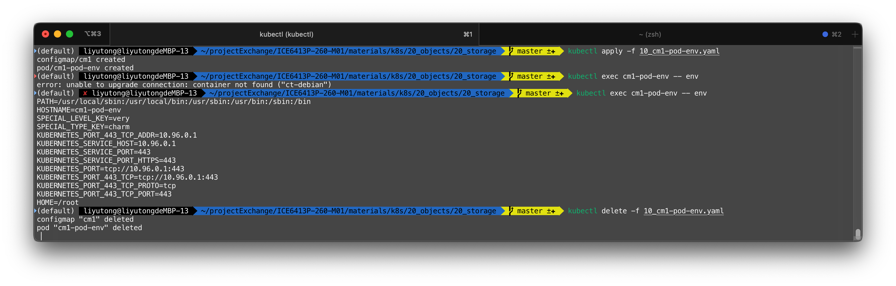
-
从一个主机目录创建ConfigMap。
./configs中的内容如下：```conf title="./configs/db.conf key3=value3 key4=value4
创建命令你如下，其中
cm2为ConfigMap的识别名称从该目录创建ConfigMap后，使用
kubectl describe cm cm2可以得到ConfigMap的值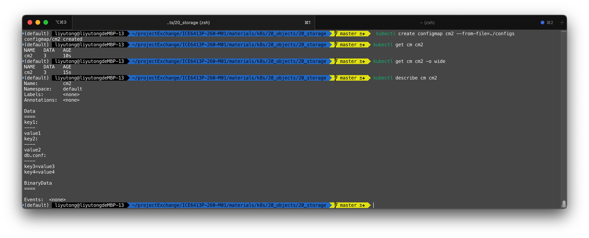
-
从文件创建ConfigMap同理
-
从一个键值对创建ConfigMap
-
可以将ConfigMap的键值对映射成环境变量。对
12_cm1-pod2-env.yaml的注解如下12_cm1-pod2-env.yamlapiVersion: v1 kind: Pod metadata: name: cm1-pod2-env spec: restartPolicy: Never containers: - name: ct-busybox # 容器名称 image: radial/busyboxplus:latest imagePullPolicy: IfNotPresent command: ["/bin/sh", "-c", "env && sleep 1000000"] # 调用容器内的env命令输出环境变量，保存到输出 envFrom: # 环境变量的来源 - configMapRef: # 引用一个ConfigMap name: cm1 # ConfigMap的名称Note
可以看到很多
KUBERNETES开头的环境变量，这些变量可以让容器知道自己运行在K8S集群中，并且访问集群服务 -
将ConfigMap等内容以环境变量的形式传递，可以选择传递哪些值、以怎样的名称传递。
14_cm1-pod3-envapiVersion: v1 kind: Pod metadata: name: cm1-pod3-env spec: restartPolicy: Never containers: - name: ct-busybox image: radial/busyboxplus:latest imagePullPolicy: IfNotPresent command: ["/bin/sh", "-c", "env && sleep 3000"] env: - name: SPECIAL_LEVEL_KEY # 环境变量名 valueFrom: configMapKeyRef: name: cm1 key: special.how - name: SPECIAL_TYPE_KEY valueFrom: configMapKeyRef: name: cm1 key: special.typeNote
和
10_cm1-pod-env.yaml中的配置大同小异，但是引用了先前创建的ConfigMap，而非同一个YAML配置文件中的ConfigMap -
将ConfigMap的内容以文件的形式传递, key-->文件名，value-->文件的内容
16_cm1-pod4-vol.yamlapiVersion: v1 kind: Pod metadata: name: cm1-pod4-vol spec: volumes: - name: config-vol # 新建卷的名字 configMap: # 卷的内容由ConfigMap决定 name: cm1 # 内容来自cm1 restartPolicy: Never containers: - name: ct-busybox image: radial/busyboxplus:latest imagePullPolicy: IfNotPresent command: ["/bin/sh", "-c", "sleep 3000"] volumeMounts: # 创建了一个卷的挂载点 - name: config-vol # 挂载的卷名称，和volume.name一致 mountPath: /etc/config # 容器内的路径使用
kubectl describe pods cm1-pod4-vol可以看到该Pod包含一个Volume
Secret
Secret 是用来保存和传递密码、密钥、认证凭证这些敏感信息的对象。使用 Secret 的好处是可以避免把敏感信息明文写在配置文件（常常是用版本控制软件管理的，且其访问的权限设定的较为宽泛）里。而在配置文件中通过 Secret 对象引用这些敏感信息。kubeadm默认生成的admin.conf中，证书数据就是被base64编码过的
这种方式的好处包括：
- 意图明确
- 避免重复
- 减少机密信息暴露机会
创建 Secret 时，K8S会用 base64 编码之后以与 ConfigMap 相同的方式存到 etcd Secret mount 到一个 Pod 时会先解密再挂载。
Q: 为什么不写在配置文件里？A: 对于很多项目，配置文件。将Secret记录在配置文件中不是一个好想法
Tip
Base64 编码/解码可以使用Linux自带的base64工具
Warning
这种编码只是起到一个混淆的作用，并没有真正的加密
v1.13后，K8S引入了加密的Secrets
graph LR
S[Secretes] -- cleartext --> A[(kube-apiserver)]
subgraph Master Node
K[local key] -- encrypt with --> A
A -- cipher --> E[etcd]
end可以看到，加密是在Master节点上进行的。由此可见，此架构仅解决了etcd数据泄露风险。但攻破Master节点后，可以在本地拿到key，仍然意味着可以接管整个集群的数据
实验
对几个配置文件的注解如下
apiVersion: v1
kind: Secret
metadata:
name: secret1
type: "kubernetes.io/rbd" # Generic type
data:
key: QVFBOWF3dFg1UjlPRkJBQWhrbzZPNGxJRGVTTndLeFo4dUNkUHc9PQ==
Note
该文件是为了挂载Ceph RBD创建的，储存的是Ceph的Secret。详见Ceph Storage Class
apiVersion: v1
kind: Secret
metadata:
name: secret2
type: Opaque # 默认类型
data:
username: YWRtaW4= # Base64 编码后的值（原始值是admin）
password: MWYyZDFlMmU2N2Rm # Base64 编码后的值（原始值是1f2d1e2e67df）
---
apiVersion: v1
kind: Pod
metadata:
name: secret2-pod-env
spec:
containers:
- name: ct-busybox
image: radial/busyboxplus
imagePullPolicy: IfNotPresent
command: [ "/bin/sh", "-c", "env && sleep 1000000"]
env:
- name: SECRET_USERNAME # 环境变量名称
valueFrom:
secretKeyRef: # 引用了Secret
name: secret2 # 需要指定Secret的名称，和secret.name相同
key: username # 需要指定secret存储中的一个key
- name: SECRET_PASSWORD
valueFrom:
secretKeyRef:
name: secret2
key: password
apiVersion: v1
kind: Pod
metadata:
name: secret3-pod-volume
spec:
containers:
- name: ct-busybox
image: radial/busyboxplus
imagePullPolicy: IfNotPresent
command: ["/bin/sh", "-c", "ls /xxx && sleep 1000000"]
volumeMounts: # 挂载secret2-vol 卷，见下方定义
- name: secret2-vol
mountPath: "/xxx"
readOnly: true
volumes: # 创建secret2-vol卷
- name: secret2-vol
secret:
secretName: secret2
我们可以看到，Secret可以作为环境变量，也可以作为Pod的Volume传入Pod
kubectl apply -f 20_secret1.yaml
kubectl get secret
kubectl apply -f 22_secret2-pod-env.yaml
kubectl logs secret2-pod-env # username, password decoded already
kubectl apply -f 24_secret3-pod-volume.yaml
kubectl exec secret3-pod-volume -- cat /xxx/username
Volume-based
PV 和 PVC 使得 K8s 集群具备了存储的逻辑抽象能力，使得在配置 Pod 的逻辑里可以忽略对实际后台存储技术的配置，而把这项配置的工作交给 PV 的配置者，即集群的管理者。存储的 PV 和 PVC 的这种关系，跟计算的 Node 和 Pod 的关系是非常类似的：PV 和 Node 是资源的提供者，根据集群的基础设施变化而变化，由 K8s 集群管理员配置；而 PVC 和 Pod 是资源的使用者，根据业务服务的需求变化而变化，由 K8s 集群的使用者即服务的管理员来配置。
Pod Volume
必须在定义Pod的时候同时定义Pod Volume，其与Pod同生共死，因此生命周期是Pod中所有对象中最长的。
Warning
Pod Volume会在Pod结束后销毁，正如Docker容器的Volume那样。
-
emptyDir - 创建一个空的目录作为卷
配置文件创建了一个emptyDir卷，挂载到了容器内
-
hostPath - 挂载一个Node上存在的目录
apiVersion: v1 kind: Pod metadata: name: vol2-pod-hostpath spec: volumes: - name: vol-data # 卷名称vol-data hostPath: # 类型是hostPath path: /tmp # 需要修改成一个存在的目录 type: Directory # 除了挂载Directory，还可以挂载单个文件 restartPolicy: Never containers: - name: ct-busybox image: busybox:latest imagePullPolicy: IfNotPresent volumeMounts: - name: vol-data mountPath: /data command: ["/bin/sh", "-c", "ls /data & sleep 3000"]Note
spec.volumes.hostPah.path需要存在Note
考虑到容器会在节点间被迁移/驱逐，挂载Node上的一个目录对于并非总是个很好的主意。但对于有些容器，hostPath可以让容器能够与Node通过文件套接字沟通（例如/var/lib/docker.sock）
Persistent Volume
Persistent Volume包括PV和PVC两部分
Persistent Volume (PV)
PV对底层共享存储的抽象。它于Pod独立，与K8S集群同寿。其从属于整个集群
根据服务的不同，PV有三种访问模式：
- ReadWriteOnce (RWO) – 单node的读写
- ReadOnlyMany (ROM) – 多node的只读
- ReadWriteMany (RWM) – 多node的读写
用户删除PVC后，PV回收策略有
- Retain 保留策略 - 允许人工处理保留的数据。（默认）
- Delete 删除策略 - 将删除pv和外部关联的存储资源，需要插件支持。
- Recycle 回收策略 - 将执行清除操作，之后可以被新的PVC使用，需要插件支持。
总体来说PV有以下几种状态
- Available – 资源尚未被claim使用
- Bound – 卷已经被绑定到claim了
- Released – claim被删除，卷处于释放状态，但未被集群回收。
- Failed – 卷自动回收失败
一般PV的常用配置参数有
CapaciityPV的存储能力Access Modes读写权限storageClassName存储类别persistentVolumeReclaimPolicy回收策略
Note
PV 可以设定其存储的类别，通过 storageClassName 参数指定一个 StorageClass 资源对象的名称。具有特定类别的 PV 只能与请求了该类别的 PVC 进行绑定。未设定类别的 PV 则只能与不请求任何类别的 PVC 进行绑定。
实验
apiVersion: v1
kind: PersistentVolume
metadata:
name: pv1 # 独一无二的名称
labels:
type: local 本地
spec:
storageClassName: manual # 该名称将用于将 PVC 请求绑定到此
capacity:
storage: 2Gi # 大小2G
accessModes:
- ReadWriteOnce # 单个容器读写
hostPath:
path: "/tmp/storage/pv1" # 存放目录
该命令创建了一个2GiB大小的PV，类型是manual，策略是ReadWriteOnce。记住这一点
PersistentVolumeClaim (PVC)
用户对于存储资源的申请被称为PVC
实验
以下一些解读。该配置文件分为两部分，第一部分：
apiVersion: v1
kind: PersistentVolumeClaim
metadata:
name: pvc1 # Claim的名称
spec:
storageClassName: manual # K8S将寻找此类型的PV进行绑定，要和40_pv1.yaml中相同
accessModes:
- ReadWriteOnce # 单节点读写，同样的K8S将寻找此类型的PV绑定
resources:
requests: # 向PV请求1G
storage: 1Gi
可以看到，这部分创建了一个PVC，类型是manual，容量需求是1GiB，权限是ReadWriteOnce。由于类型和权限都匹配pv1，因此pv1这个PV，将用于服务pvc1。
第二部分：
apiVersion: v1
kind: Pod
metadata:
name: pvc1-pod
spec:
volumes: # Pod Volume
- name: vol-data # 自定义名称
persistentVolumeClaim: # Volume的存储后端来自PVC
claimName: pvc1 # PVC的名称
containers:
- name: ct-busybox
image: busybox:latest
imagePullPolicy: IfNotPresent
command: ["/bin/sh", "-c", "touch /data/xxx & sleep 60000"]
# 在Data下创建xxx文件
volumeMounts:
- name: vol-data # 把卷挂载到/data
mountPath: /data
readOnly: false
第二部分创建了一个Pod，该Pod配置文件定义了一个Pod Volume. 这个Volume需要pvc1提供存储。
我们可以发现，K8S服务用户不需要考虑PV是怎么实现的。用户只需要提出PVC，然后用这些PVC为定义的卷提供存储能力。至于安排这些PVC，用户也只需要为它们贴上storageClass、accessModes等标签，然后依靠集群进行调度。
kubectl apply -f 42_pvc1-pod.yaml
# create a PVC which will bound to the PV1, and create a pod
kubectl exec pvc1-pod -- ls /data
kubectl get pvc
kubectl get pv
可以看到，这个2GiB的PV变成了Bond状态，PVC的容量变成了2GiB。这表明其已经与PVC绑定。K8S不允许一个PV绑定多个PVC，因此该PV不能和更多的PVC绑定了（能力的浪费？）。其他的PVC只有等待该PV变成Available的时候才能和它绑定
Warning
如果PVC里面设置的容量超过PV里面定义的容量，那么PVC是创建不成功的，会一直处于Pending状态。
我们登陆pvc1-pod所在的节点查看一下
可以看到PV的存储能力由node2节点的本地存储提供。
现在，我们删除PVC后，再次查看PV的状态
$ kubectl delete -f 42_pvc1-pod.yaml
persistentvolumeclaim "pvc1" deleted
pod "pvc1-pod" deleted
$ kubectl get pv
NAME CAPACITY ACCESS MODES RECLAIM POLICY STATUS CLAIM STORAGECLASS REASON AGE
pv1 2Gi RWO Retain Released default/pvc1 manual 26m
发现其状态为Released. 我们必须将该PV回复成Available状态，才能再次绑定PVC到该PV。
Tip
kubectl patch pv <pv-name> -p '{"spec":{"claimRef": null}}'命令可以将一个Release状态的PV恢复可用
Storage Class
PV 和 PVC 模式需要运维人员先创建好 PV，然后开发人员定义 PVC 进行Bond,维护成本很高。K8s 提供一种自动创建 PV 的机制，叫 StorageClass，它的作用就是创建 PV 的模板。
具体来说，StorageClass 会定义一下两部分：
- PV 的属性 ：比如存储的大小、类型等；
- 创建这种 PV 需要用到的存储插件：比如 Ceph 等；
有了这两部分信息，K8s 就能根据用户提交的 PVC 找到对应的 StorageClass，然后 K8s 就会调用 StorageClass 声明的存储插件创建需要的 PV。
实验
apiVersion: storage.k8s.io/v1 # 使用storage.k8s.io API
kind: StorageClass # 定义了一个StorageClass
metadata:
name: hostpath2 # 名称
# 存储能力的提供方是docker.io/hostpath，自动存在于DockerDesktopc创建的集群中
provisioner: docker.io/hostpath
reclaimPolicy: Delete
apiVersion: v1
kind: PersistentVolumeClaim # 普通地申请了1GiB大容量
metadata:
name: storage-sc
spec:
storageClassName: hostpath2
accessModes:
- ReadWriteOnce
resources:
requests:
storage: 1Gi
---
apiVersion: v1
kind: Pod
metadata:
name: storage-pvc-sc
spec:
volumes:
- name: data-vol
persistentVolumeClaim:
claimName: storage-sc
containers:
- name: busybox-pvc-sc
image: busybox
command: ["/bin/sh", "-c", "sleep 60000"]
volumeMounts:
- name: data-vol
mountPath: /usr/share/busybox # 卷被挂载的路径
readOnly: false
kubectl apply -f 50_sc1-hostpath.yaml # create a default storage class
kubectl get storageClass # a new class should appear
kubectl apply -f 52_sc1-pvc-pod.yaml # create a PVC and a pod
kubectl get pv
kubectl get pvc
理论上，应该有一个PV被自动创建。实际上，没有PV被创建，Pod没有被部署，PVC停在了ExternalProvisioning阶段。这是因为kubeadm创建的集群中不存在docker.io/hostpath这个provisioner
因此下方的实验注定是失败的
在kubeadm部署的集群上，需要自定义一个host-path provisioner才能进行实验。可以参考这个项目
Third-party Drivers
假设说我们要使用NFS，我们就需要一个nfs-client的自动装载程序，我们称之为Provisioner，这个程序会使用我们已经配置好的NFS服务器自动创建持久卷，也就是自动帮我们创建PV。
Custom
把大象放进冰箱需要三步：1. 把冰箱打开；2. 把大象放进去；3. 把冰箱门关上
创建一个自定义的Provisioner也需要三步
首先，创建一个rbac权限绑定，对ServiceAccount: hostpath-provisioner-account授予hostpath-provisioner-rule权限，主要是允许该账户创建PV
kind: ClusterRole
apiVersion: rbac.authorization.k8s.io/v1
metadata:
name: VAR-provisioner-rule # 规则名称，可定制
rules:
- apiGroups: [""] # 给予创建PV的权利
resources: ["persistentvolumes"]
verbs: ["get", "list", "watch", "create", "delete"]
- apiGroups: [""] # 给予监控、修改PVC的权利
resources: ["persistentvolumeclaims"]
verbs: ["get", "list", "watch", "update"]
- apiGroups: ["storage.k8s.io"] # 给予获取storageClasses的权利
resources: ["storageclasses"]
verbs: ["get", "list", "watch"]
- apiGroups: [""] # 给予监控事件的权利
resources: ["events"]
verbs: ["list", "watch", "create", "update", "patch"]
---
kind: ClusterRoleBinding
apiVersion: rbac.authorization.k8s.io/v1
metadata:
name: VAR-provisioner-binding # binding的名称，可定制
roleRef:
apiGroup: rbac.authorization.k8s.io
kind: ClusterRole
name: VAR-provisioner-rule # 引用上面的规则，不能更改
subjects:
- kind: ServiceAccount # 创建的是ServiceAccount
name: VAR-provisioner-account # ServiceAcount的名称
namespace: kube-system # 命名空间选择系统命名空间，因为这属于运维范畴
然后需要创建一个自定义的storageClass，名称和provissioner名称可以定义
kind: StorageClass
apiVersion: storage.k8s.io/v1
metadata:
name: VAR # 自定义的storageClass名称
annotations:
#是否为默认的storageClass
storageclass.kubernetes.io/is-default-class: "false"
provisioner: DOMAIN/VAR-PROVISIONER # 自定义的provisioner名称
reclaimPolicy: Retain # 自定义策略
parameters:
key: value # 一些其他参数
apiVersion: extensions/v1beta1
kind: Deployment
metadata:
name: VAR-provisioner # 自定义名称
namespace: kube-system
spec:
replicas: 1 # 保持一个副本
selector:
matchLabels:
app: VAR-provisioner # 自定义的label，和spec.template.metadata.labels匹配
strategy:
type: Recreate # 这个Pod是无状态的，Recreate就完事了
template:
metadata:
labels:
app: VAR-provisioner# 和spec.selector.matchLabels匹配
spec:
serviceAccountName: VAR-provisioner-account # ServiceAcount的名称
containers:
- name: VAR-provisioner # 自定义名称
image: DOMAIN/VAR-PROVISIONER # 和storageClass中的provisioner匹配
securityContext: # 允许特权执行
privileged: true
volumeMounts: ...
resources: ...
volumes: ...
你设计的这个容器接受的参数是
- K8S集群的状态、实践
- StorageClass传入的参数
- 你定义的其他存储资源（快存储、本地映射的volume、NFS端点）
你的容器需要完成的工作是
- 监听PVC的创建
- 在自己管理的存储资源中，根据PVC的请求为PVC保留资源
- 操作K8S集群，使用为该PVC保留的资源创建PV
- 将PVC与PV相绑定
- 监听PVC的回收
- 根据回收策略，释放存储资源
NFS
NFS是非常常见的网络存储协议。Kubernetes 不包含内部 NFS 驱动。你需要使用外部驱动为 NFS 创建 StorageClass.
kubernets-sigs/nfs-subdir-external-provisioner是一个流行的为K8S集群提供NFS的项目
首先，需要创建一个有NFS能力的节点。这里我们选择创建一台独立的节点用于提供NFS服务。该节点的主机名为storage0。我们需要在storage0节点上安装nfs-common, nfs-kernel-server套件
该节点还需要配置/etc/exports，添加以下选项：
例如
Note
该命令将会允许来自[cidr]的客户端以rw或者ro的方式访问/path/to/server_data目录。CIDR即形如192.168.1.0/24的无类域间路由描述
Warning
/path/to/server_data必须手动创建，并且赋予"NFS映射的用户"读写权限。一般来说NFS会把用户映射到root组的other，因此需要使用chmod go+w /path/to/server_data修改权限
Tip
nfs-kernel-server 受systemd管理
所有的K8S节点都是NFS客户端，需要安装nfs-common组件。客户端挂载NFS存储有两种方式
- 单次挂载
其中server_ip是NFS服务器IP(storage0节点IP)，/path/to/server_data为NFS服务器的共享路径。/path/to/client_data为本地挂载路径
- 开机启动挂载
需要修改/etc/fstab，添加挂载配置
Warning
使用/etc/fstab挂载方法时，非常有必要用charttr +i /path/to/client_data命令为/path/to/client_data添加不可变选项。防止其意外产生读写行为
Tip
mount -a可以挂载所有的挂载点
首先将该项目克隆到本地
git clone https://github.com/kubernetes-sigs/nfs-subdir-external-provisioner
cd nfs-subdir-external-provisioner
git checkout nfs-subdir-external-provisioner-4.0.16 # 使用4.0.16
根据官网的提示，修改并创建对应的rbac角色
NS=$(kubectl config get-contexts|grep -e "^\*" |awk '{print $5}')
NAMESPACE=${NS:-default}
sed -i '' "s/namespace:.*/namespace: $NAMESPACE/g" ./deploy/rbac.yaml ./deploy/deployment.yaml
kubectl create -f deploy/rbac.yaml
然后修改deploy/deployment.yaml和class.yaml，添加NFS服务器的地址和目录
apiVersion: apps/v1
kind: Deployment
metadata:
name: nfs-client-provisioner
labels:
app: nfs-client-provisioner
# replace with namespace where provisioner is deployed
namespace: <YOUR_NAMESPACE> # provisioner 的 namespace, 默认为default
spec:
replicas: 1
strategy:
type: Recreate
selector:
matchLabels:
app: nfs-client-provisioner
template:
metadata:
labels:
app: nfs-client-provisioner
spec:
serviceAccountName: nfs-client-provisioner
containers:
- name: nfs-client-provisioner
image: k8s.gcr.io/sig-storage/nfs-subdir-external-provisioner:v4.0.2
# 可能需要换一个镜像
volumeMounts:
- name: nfs-client-root
mountPath: /persistentvolumes
env:
- name: PROVISIONER_NAME
value: k8s-sigs.io/nfs-subdir-external-provisioner # 或者Storage class的provisioner匹配
- name: NFS_SERVER
value: <YOUR NFS SERVER HOSTNAME> # NFS 地址
- name: NFS_PATH
value: <YOUR NFS SERVER PATH> # NFS 目录
volumes:
- name: nfs-client-root
nfs:
server: <YOUR NFS SERVER HOSTNAME> # NFS 地址
path: <YOUR NFS SERVER PATH> # NFS 目录
Tip
k8s.gcr.io/sig-storage/nfs-subdir-external-provisioner镜像可能无法轻松下载。可以用registry.hub.docker.com/davidliyutong/nfs-subdir-external-provisioner替代
apiVersion: storage.k8s.io/v1
kind: StorageClass
metadata:
name: nfs-client
provisioner: k8s-sigs.io/nfs-subdir-external-provisioner
# 匹配 deployment's env PROVISIONER_NAME
parameters:
# pathPattern: "${.PVC.namespace}-${.PVC.name}"
# waits for nfs.io/storage-path annotation, default is empty string.
# onDelete: delete
# archiveOnDelete: false
| Name | Description |
|---|---|
| onDelete | delete 在PVC删除后删除数据, retain在PVC删除后保留数据；默认是保存在archived-<volume.Name>目录下 |
| archiveOnDelete | false 在PVC删除后删除数据, 否则进行归档。如果有onDelete，archiveOnDelete 将会被忽略。 |
| pathPattern | 卷目录的命名方式，例如 ${.PVC.namespace}-${.PVC.name}可以创建<pvc-namespace>-<pvc-name> |
对修改后的配置进行应用
Tip
设置一个storageClass为默认
kubectl patch storageclass <storageClass> -p '{"metadata": {"annotations":{"storageclass.kubernetes.io/is-default-class":"true"}}}'
取消一个storageClass的默认设置
nfs-subdir-external-provisioner项目提供了一个测试用例。该测试用例由test-claim.yaml和test-pod.yaml构成
kind: PersistentVolumeClaim
apiVersion: v1
metadata:
name: test-claim
spec:
storageClassName: nfs-client
accessModes:
- ReadWriteMany
resources:
requests:
storage: 1Mi
kind: Pod
apiVersion: v1
metadata:
name: test-pod
spec:
containers:
- name: test-pod
image: busybox:stable
command:
- "/bin/sh"
args:
- "-c"
- "touch /mnt/SUCCESS && exit 0 || exit 1"
volumeMounts:
- name: nfs-pvc
mountPath: "/mnt"
restartPolicy: "Never"
volumes:
- name: nfs-pvc
persistentVolumeClaim:
claimName: test-claim
解释:
该测试用例将申请一个容量为1MiB的PVC，并且在这个PVC挂载到容器的/mnt中。容器将尝试在/mnt中创建一个SUCCESS文件
当容器运行完毕后，我们应该能在NFS目录中看到新创建的文件
当我们删除测试用例的时候，PVC和PV将一并删除（因为storageClass.yaml中的onDelete设置为了delete）
Ceph
Todo
这一部分的实验有待改进
Ceph是一个统一的分布式存储系统，设计初衷是提供较好的性能、可靠性和可扩展性。K8S通过cephfs支持Ceph。
如果要部署Ceph，可以参考官方的教程Ceph
Ceph的部署思路基本上是
- 首先在单主机上引导一个Ceph集群，只有一个节点
- 随后将其他节点加入集群
- 节点和节点之间用SSH免密码管理
一些Ceph的概念
MONMonitor，Ceph守护进程，所有节点都向Monitor报告。一个集群中应该有3-5个MONRBDCeph对外提供的块存储服务（Block Storage）RGWCeph对外提供的对象存储服务，兼容Amazon S3和OpenStac Swift （Object Storage）MDS元数据服务器OSDObject Storage Device，提供存储能力的设备RADOS``MON,OSD的集合
Ceph RBD介绍了管理员应该如何为K8S添加Ceph
flowchart TD
subgraph APPS
end
APPS --> RADOS
subgraph S3/Swift
end
S3/Swift --> radosgw --> RADOS
subgraph VMs
end
VMs --> librd --> RADOS
subgraph libcephfs
end
libcephfs --> MDS --> RADOS
subgraph RADOS
direction LR
subgraph Librados
end
subgraph MON
M0((Mon))
M1((Mon))
M2((Mon))
end
subgraph OSD
subgraph OSD1
direction LR
O10(OSD)
O11(Filesystem)
O12(Disk)
end
subgraph OSD2
direction LR
O20(OSD)
O21(Filesystem)
O22(Disk)
end
end
end首先创建一些虚拟存储设备并且将它们挂载到虚拟机（storage0）中。Ceph只能利用满足以下条件的设备：
- 没有文件系统
- 没有分区
- 设备没有被mount
- 设备没有LVM状态
- 设备大于5GB
- 设备不能包括Ceph BlueStore OSD
因此我们不需要格式化这些存储设备。本次试验使用了3块10G的虚拟硬盘，他们分别是storage:/dev/vdb、storage:/dev/vdc和storage:/dev/vdd。
Tip
fdisk -l命令可以查看计算机上的存储设备
配置Ceph节点，完成以下设置
- 设置hostname和/etc/hosts。本机的主机名也需要添加到/etc/hosts中
- 设置SSH免密码登陆
- 关闭selinux。iptables放行ceph-monitor和ceph-osd的端口（6800-7300）
- 节点配置NTP时间同步并获取一致的时间。Ceph是分布式集群，对时间很敏感，如果时间不正确可能会导致集群崩溃。
- 节点安装Docker, Python3
如果是多节点的集群，需要在每个节点上重复配置。处于节约成本的考虑，本次实验只使用一个节点挂载多个磁盘。
curl --silent --remote-name --location https://github.com/ceph/ceph/raw/octopus/src/cephadm/cephadm
sudo install cephadm /usr/local/bin/cephadm
现在，应该可以在终端中使用cephadm命令。我们使用cephadm引导集群
export IP=10.64.13.100
export ADMIN_USER=admin
export ADMIN_PASSWD=admin
sudo cephadm bootstrap --mon-ip $IP --initial-dashboard-user $ADMIN_USER --initial-dashboard-password $ADMIN_PASSWD --dashboard-password-noupdate --skip-mon-network
Note
$IP为第一个mon节点的IP，ADMIN_USER，ADMIN_PASSWD为初始用户名和密码
Note
This command will:
- Create a monitor and manager daemon for the new cluster on the local host.
- Generate a new SSH key for the Ceph cluster and add it to the root user’s /root/.ssh/authorized_keys file.
- Write a copy of the public key to /etc/ceph/ceph.pub.
- Write a minimal configuration file to /etc/ceph/ceph.conf. This file is needed to communicate with the new cluster.
- Write a copy of the client.admin administrative (privileged!) secret key to /etc/ceph/ceph.client.admin.keyring.
- Add the _admin label to the bootstrap host. By default, any host with this label will (also) get a copy of /etc/ceph/ceph.conf and /etc/ceph/ceph.client.admin.keyring.
如图所示，成功启动集群后，我们就可以通过Web面板查看集群状态。
由于采用了容器化的理念。Ceph不在主机上安装Ceph工具，而是使用Docker容器提供管理用的工具：
该命令将会启动一个Docker容器来使用ceph工具。
我们略过添加mon节点的部分，因为这个Ceph集群只有一个mon节点。我们需要将创建的3块硬盘添加进Ceph集群
[ceph] $ ceph orch device ls
[ceph] $ ceph orch daemon add osd storage0:/dev/vdb
[ceph] $ ceph orch daemon add osd storage0:/dev/vdc
[ceph] $ ceph orch daemon add osd storage0:/dev/vdd
[ceph] $ ceph status
我们可以发现，Ceph集群的状态变成了HEALTH_OK
Tip
这篇文章介绍了如何用Rook在K8S集群上部署Ceph。它支持从K8S集群节点上的磁盘设备组成Ceph集群
我们需要为K8S创建一个OSD池，命名为kube，以及一个client认证，命名为client.kube
[ceph] $ ceph osd pool create rbd # rbd 默认pool
[ceph] $ ceph osd pool create kube 128
pool 'kube' created
[ceph] $ ceph auth get-or-create client.kube mon 'allow r' osd 'allow class-read object_prefix rbd_children, allow rwx pool=kube' -o ceph.client.kube.keyring
[ceph] $ ceph auth get-key client.admin | base64
QVFDOTRZRmlCa00rTHhBQUxrUGpnQjZLOERGR1lxeHNQRU5NbWc9PQ==
[ceph] $ ceph auth get-key client.kube | base64
QVFBbDdZRmlJRjB5TFJBQStWK1ZTbjBzWUtNZ2U5Y1dnNk5TY3c9PQ==
Note
128 为PlaceGroup（PG）数量，建议设置为为2的整数幂。该值上限取决于存储能力
Tip
若要删除pool，须先开启删除选项后才可删除
Tip
Ceph默认Pool的size是3，最小值是2，这意味着每个pool都会分布在三台节点上。我们只有一个OSD节点，因此需要将pool的size设置成1
以设置pool的size为1若要让K8S集群能够挂载Ceph存储，需要在所有的节点上安装ceph-common软件包
我们将上一步创建的Ceph密钥添加进K8S的Secret存储区中。可以通过配置文件或命令做到这一点
apiVersion: v1
kind: Secret
metadata:
name: ceph-secret
namespace: kube-system
data:
key: QVFDOTRZRmlCa00rTHhBQUxrUGpnQjZLOERGR1lxeHNQRU5NbWc9PQ==
type:
kubernetes.io/rbd
---
apiVersion: v1
kind: Secret
metadata:
name: ceph-secret-user
namespace: default
data:
key: QVFBbDdZRmlJRjB5TFJBQStWK1ZTbjBzWUtNZ2U5Y1dnNk5TY3c9PQ==
type:
kubernetes.io/rbd
kubectl create secret generic ceph-secret --type="kubernetes.io/rbd" \
--from-literal=key='QVFDOTRZRmlCa00rTHhBQUxrUGpnQjZLOERGR1lxeHNQRU5NbWc9PQ==' \
--namespace=kube-system
kubectl create secret generic ceph-secret-user --type="kubernetes.io/rbd" \
--from-literal=key='QVFBbDdZRmlJRjB5TFJBQStWK1ZTbjBzWUtNZ2U5Y1dnNk5TY3c9PQ==' \
--namespace=default
Note
需要替换具体的Key
K8S自带的容器不包含ceph客户端，因此即使在所有的节点上都安装了ceph-common，K8S也无法和Ceph集群通讯。此时可以手动在Ceph集群中使用rbd create <image>，然后手动创建PV/PVC给Pod使用，但是绝无可能实现StorageClass.
Warning
ceph-common的版本最好和Ceph集群的版本匹配
Note
需要从cephadm创建的集群拷贝/etc/ceph/ceph.conf和/etc/ceph/ceph.client.admin.keyring到K8S集群各个节点对应目录
我们创建一个测试用例
apiVersion: v1
kind: PersistentVolume
metadata:
name: ceph-pv
spec:
capacity:
storage: 100M
accessModes:
- ReadWriteOnce
rbd:
monitors:
- 10.64.13.100:6789
pool: kube
image: test-pv
user: admin
secretRef:
name: ceph-secret-user
fsType: ext4
readOnly: false
persistentVolumeReclaimPolicy: Recycle
---
kind: PersistentVolumeClaim
apiVersion: v1
metadata:
name: ceph-pvc
spec:
accessModes:
- ReadWriteOnce
resources:
requests:
storage: 100M
PVC成功绑定
Note
在使用StorageClass的过程中，有可能会出现PVC一直Pending，rbd-provisioner日志输出"unexpected error getting claim reference: selfLink was empty, can't make reference"。这时候需要修改K8S主节点的/etc/kubernetes/manifests/kube-apiserver.yaml。添加--feature-gates=RemoveSelfLink=false参数。最后应用kubectl apply -f /etc/kubernetes/manifests/kube-apiserver.yaml
Ref
Network
k8s的网络模型特点如下：
- 每个 Pod 都拥有一个独立 IP 地址。Pod 内所有容器共享一个网络命名空间
- 扁平网络：集群内所有 Pod 都在一个直接连通的扁平网络中，可通过 IP 直接访问。这意味着：
- 所有容器实现了基于iptables的无 NAT 访问
- 所有 Node 和所有容器之间的无 NAT 访问
Note
这意味着容器自己看到的 IP 跟其他容器看到的一样
- 内网分离。Service/Cluster IP 只可以在集群内部访问(实现 LB)。外部请求需要通过 NodePort（无LB)、LoadBalance（云厂商实现LB） 或者 Ingress（插件实现LB) 来访问
大部分有关网络的概念都在Service章节中提到了，本部分进行了一些补充实验
hostPort
hostPort 相当于docker run -p <hsotPort>:<containerPort>，为容器在主机上做个 NAT 映射，不用创建 SVC，因此端口只在容器运行的Node上监听，其无法负载多Pod。
我们需要定位到该Pod调度的节点
$ kubectl get pods -o wide | grep pod1-host
pod1-host-port 0/1 ContainerCreating 0 4s <none> node2 <none> <none>
因此，我们登陆集群，然后用curl测试该Pod的访问性
Note
Docker-Desktop 搭建的集群无法在宿主机上使用这种方法测试，而是需要Attach到对应的容器中
hostNetwork
hostNetwork相当于 docker run --net=host，与主机共享 network 网络栈，不用创建SVC，因此端口只在容器运行的node上监听。
Pod的80端口被映射到了主机。我们可以用http://node2:80访问该服务
nodePort
在nodePort下，由 kube-proxy 操控为所有节点统一配置 iptables 规则。因此，SVC 上的 nodePort 会监听在所有的节点上。即使只有 1 个 Pod/服务副本，用户也可以通过访问任意节点的 nodePort 使用到这个服务。
我们可以尝试在外部直接访问该服务
Note
10.119.11.103是node0的外部IP
externalIP
nodeport会监听在所有的节点上，有时候我们不想要这样。这时候可以通过SVC来实现pod间的负载，实现只监听某台指定node上的节点。
apiVersion: apps/v1
kind: Deployment
metadata:
name: service1-dep-external-ip
labels:
app: nginx
spec:
replicas: 2 # 创建了两个副本
selector:
matchLabels:
app: nginx
template:
metadata:
labels:
app: nginx
spec:
containers:
- name: nginx
image: nginx:1.9.0
imagePullPolicy: IfNotPresent
ports:
- containerPort: 80
---
apiVersion: v1
kind: Service
metadata:
name: service2-external-ip
spec:
selector:
app: nginx
ports:
- protocol: TCP
port: 80
externalIPs:
- <YOUR_NODE_IP> # 需要替换成一个Node的IP
Note
<YOUR_NODE_IP>部分需要替换成Node的外部IP（即从集群外访问Node使用的IP）这个IP是为了设置iptables用的。如果使用了内部IP，则来自外部的通讯会被iptables拒绝，服务就只能在集群内访问了。
另一方面如果<YOUR_NODE_IP>被设置成了集群节点网卡获得的IP，而Replica数量又大于1，最终导致多个Pod调度到了同一个节点。则会发生重复绑定的问题。如果它们没有调度到一个节点，就会出现不在改网卡节点的Pod无法启动的问题。
因此，我们需要将<YOUR_NODE_IP>替换成一个外部浮动IP
我们将该地址设置为node2的外部浮动IP，即10.119.11.125
在集群外，通过10.119.11.125访问失败。这可能是因为我们节点托管的云主机在浮动IP的处理上的问题。
在集群内，我们使用10.64.13.12访问该服务失败，但是通过10.119.11.125访问成功。
Ingress Controller
Ingress is also an augmented reality massively multiplayer online role-playing location-based game created by Niantic Labs.
Ingress Controller首先是一种特殊的、独立的Pod资源，而不是和DaemonSet 、Deployment等同的概念。一般来说，Ingress Controller就是一个运行着有七层代理能力或调度能力的应用，比如：NGINX、HAproxy、Traefik、Envoy。Ingress应该使用DaemonSet部署在每一个节点上，并且位于kube-system命名空间
graph LR
C0([Client]) -.-> |LB| I0
subgraph K8S Cluster
I0[Ingress] --> |Ingress Routing<br> L7| S[Service]
S --> |L4| P0[Pod]
S --> |L4| P1[Pod]
endServiced的缺陷是它的工作基于iptables或ipvs的，只是工作在TCP/IP协议栈。Service是无法调度外部的HTTPS请求到内部的HTTP服务，并实现负载均衡（证书和私钥的配置问题）。另一个例子是SSO认证问题。外部DNS解析一般是基于域名解析，解析到的地址也是负载均衡调度器的地址。而SSO会话是微服务的后端服务器建立的连接，因此需要每一台后端服务器都配置证书，增大开销。如果我们认为内部网络是安全的，就可以在接入层卸载SSO会话。这时候，集群外部使用HTTPS通信，内部使用HTTP通信。调度器Pod运行一个七层的应用代理。当用户请求时，先到达这个独特的调度器，而不是直接到达后端的Pod，Pod和Pod之间由于是在同一网段可以直接通信，无需经过Service。这个Pod就叫做Ingress Controller。
Ingress则是K8S对象的一员，它负责生命Ingress需求。例如
apiVersion: extensions/v1beta1
kind: Ingress
metadata:
name: test
spec:
rules:
- host: foo.bar.com
http:
paths:
- path: /foo # 可以省略代表`/`根路径
backend:
serviceName: s1
servicePort: 80
- path: /bar
backend:
serviceName: s2
servicePort: 80
就定义了两条Path（/foo, /bar）的Ingress需求
我们主要实验Ingress的集中较为常见的使用场景：
- 外部HTTPS流量进入集群后，卸载为HTTP流量
- 外部HTTPS流量，在Ingress Controller卸载，然后重新加密为SSL
- 外部HTTPS流量，不进行卸载，直接定向到后端
HTTPS需要证书。我们可以用openssl工具生成一个
openssl req -x509 -nodes -days 365 -newkey rsa:2048 \
-keyout <KEY_FILENAME> -out <CERT_FILENAME> \
-subj "/CN=*.xxx.com/O=xxx.com"
Note
-days 是证书的有效期
CN=*.xxx.com代表一个通配符证书，O=xxx.com是组织名。/分割。还有很多其他的信息可以附加到这个参数重
<KEY_FILENAME>是密钥的输出路径
<CERT_FILENAME> 是证书的输出路径
在测试Ingress的时候，我们需要让客户端的请求带上合适的请求头curl -H可以做到这一点
会让请求报头指定的服务器的域名设置为svc.xxx.com，这就模拟了通过域名浏览的行为，而不必真正购买域名设置解析。
实验 - 安装ingress-nginx
Ingress Controller需要安装在集群上。推荐的方法是通过Helm安装，但不完全通过Helm安装
Tip
可以通过Helm-Install获取安装Helm安装的方法。
Helm安装K8S应用有如下阶段
- 向Helm添加Repo。一个Repo就像是一个静态的站点
- Helm从Report下载Charts（tgz格式）
- Helm解压Charts，根据Charts部署APP
由于网络原因，我们显然需要对这个过程加以改动:
- 使用代理下载Charts
- 修改Charts中引用的镜像，替换成可以下载的
执行以下命令
helm repo add ingress-nginx https://kubernetes.github.io/ingress-nginx # 添加Repo
helm repo update
helm fetch ingress-nginx/ingress-nginx
tar -xvf ingress-nginx-x.xx.x.tgz
Tip
x.xx.x为下载的ingress-nginx版本
将会把ingress-nginx的Charts解压到当前目录的ingress-nginx子目录下。我们需要修改其中的values.yaml以适应我们的集群。我们的集群有如下特点：
- 没有外部的LB设施
- 没有安装内部的LB设施（例如MetalLB）
- 存在多个出口节点
k8s.gcr.io/ingress-nginx/kube-webhook-certgen和k8s.gcr.io/ingress-nginx/controller镜像可能会无法下载，因此需要替换
修改values.yaml如下
# values-prod.yaml
controller:
name: controller
image:
registry: registry.hub.docker.com
image: davidliyutong/ingress-nginx-controller # 镜像替换
digest: # 需要把digest清零或者修改成正确的值
dnsPolicy: ClusterFirstWithHostNet # 使用K8S的DNS
extraArgs: # SSL-Passthrough 实验中需要的功能
enable-ssl-passthrough:
hostNetwork: true # 使用宿主网络，这将会占用所有出口的80/443端口
publishService:
# hostNetwork 模式下设置为false，通过节点IP地址上报ingress status数据，不创建服务
enabled: false
kind: DaemonSet
nodeSelector:
role: lb # 如果添加该选项，则只有存在role=lb的节点上才会有Pod
service: # HostNetwork 模式不需要创建service
enabled: false
admissionWebhooks:
patch:
enabled: true
image:
registry: registry.hub.docker.com
image: davidliyutong/ingress-nginx-kube-webhook-certgen # 镜像替换
digest:
defaultBackend: # 路由没有命中时候的404页面提供方
enabled: true
name: defaultbackend
image:
registry: registry.hub.docker.com
image: davidliyutong/ingress-nginx-defaultbackend-amd64 # 镜像替换
digest:
我们需要创建一个ingress-nginx的命名空间，然后在该命名空间内安装ingress-nginx。这样的好处是卸载的时候只需要删除该命名空间，就可以删除所有的安装。
最后，手动安装ingrex-nginx
helm install --namespace ingress-nginx ingress-nginx ./ingress-nginx \
-f ./ingress-nginx/values.yaml
所有Controller都READY标志着部署成功
$ kubectl get pods -n ingress-nginx -o wide
NAME READY STATUS RESTARTS AGE IP NODE NOMINATED NODE READINESS GATES
ingress-nginx-controller-sht2v 1/1 Running 0 22m 10.64.13.11 node1 <none> <none>
ingress-nginx-controller-wjb5j 1/1 Running 0 22m 10.64.13.12 node2 <none> <none>
ingress-nginx-defaultbackend-8657d58dfc-hvx7s 1/1 Running 0 22m 10.233.166.150 node1 <none> <none>
Tip
helm uninstall ingress-nginx 可以反安装
kubectl delete namespace ingress-nginx 也可以，这是因为所有的ingress-nginx组件都安装在ingress-nginx命名空间下
实验 - 编译镜像
我们首先创建一系列的自签名证书
#!/bin/bash
cd 12_svc2/
openssl genrsa -out ca.key 1024
openssl req -new -key ca.key -out ca.csr \
-subj "/C=CN/ST=Zhejiang/L=Hangzhou/O=My\ CA/CN=localhost" # 替换
openssl x509 -req -in ca.csr -signkey ca.key -out ca.crt
openssl genrsa -out server.key 1024
openssl req -new -key server.key -out server.csr \
-subj "/C=CN/ST=Zhejiang/L=Hangzhou/O=My\ CA/CN=localhost" # 替换
openssl x509 -req -CA ca.crt -CAkey ca.key -CAcreateserial \
-in server.csr -out server.crt
rm ca.csr ca.srl server.csr
mv server.key ./src/
mv server.crt ./src/
cd ..
openssl req -x509 -nodes -days 365 -newkey rsa:2048 -keyout 14_svc3/ic.key \
-out 14_svc3/ic.crt -subj "/CN=*.xxx.com/O=xxx.com"
openssl req -x509 -nodes -days 365 -newkey rsa:2048 -keyout 16_svc4/ic.key \
-out 16_svc4/ic.crt -subj "/CN=*.xxx.com/O=xxx.com"
openssl req -x509 -nodes -days 365 -newkey rsa:2048 -keyout 18_svc5/ic.key \
-out 18_svc5/ic.crt -subj "/CN=*.xxx.com/O=xxx.com"
编译Ingress实验中使用的Docker镜像并且打标签。我们使用一个脚本来交互式地完成这项过程
#!/bin/bash
read -r -p "Input your docker username:" DOCKER_USERNAME
if [ ! $DOCKER_USERNAME]; then
echo "Username not provided"
exit 1;
fi
cd 10_svc1/src
docker build -t $DOCKER_USERNAME/nginx-ingress-demo-svc1:0.1 .
cd ../..
cd 12_svc2/src
docker build -t $DOCKER_USERNAME/nginx-ingress-demo-svc2:0.1 .
cd ../..
cd 14_svc3/src
docker build -t $DOCKER_USERNAME/nginx-ingress-demo-svc3:0.1 .
cd ../..
cd 16_svc4/src
docker build -t $DOCKER_USERNAME/nginx-ingress-demo-svc4:0.1 .
cd ../..
cd 18_svc5/src
docker build -t $DOCKER_USERNAME/nginx-ingress-demo-svc5:0.1 .
cd ../..
cd svc6/src
docker build -t $DOCKER_USERNAME/nginx-ingress-demo-svc6:0.1 .
cd ../..
read -r -p "Push images ? [y/N]:" PUSH
case $PUSH in
[yY][eE][sS]|[yY])
docker login
docker push $DOCKER_USERNAME/nginx-ingress-demo-svc1:0.1
docker push $DOCKER_USERNAME/nginx-ingress-demo-svc2:0.1
docker push $DOCKER_USERNAME/nginx-ingress-demo-svc3:0.1
docker push $DOCKER_USERNAME/nginx-ingress-demo-svc4:0.1
docker push $DOCKER_USERNAME/nginx-ingress-demo-svc5:0.1
docker push $DOCKER_USERNAME/nginx-ingress-demo-svc6:0.1
echo "Done"
;;
[nN][oO]|[nN])
echo "Done"
;;
*)
echo "Invalid input..."
exit 1
;;
esac
Note
该脚本需要在25_network/30_ingress目录下执行。脚本首先询问需要使用的Docker用户名，然后将其打上相应的TAG。最后，脚本会询问用户要不要将镜像PUSH到Docker Registry上
HTTP-Ingress-HTTP
我们首先分析这个配置文件
apiVersion: apps/v1
kind: Deployment
metadata:
name: svc1-deployment
labels:
app: nginx-ingress-demo # 和Service.spec.selector匹配
spec:
replicas: 2
selector:
matchLabels: # 和spec.template.metadata.labels匹配
app: nginx-ingress-demo
template:
metadata:
labels:
app: nginx-ingress-demo # 和spec.selector.matchLabels匹配
spec:
containers:
- name: ct-go-server
image: wukongsun/nginx-ingress-demo-svc1:0.1
imagePullPolicy: IfNotPresent
ports:
- containerPort: 8080
第一部分，启动了一个Go语言编写的服务器
package main
import (
"fmt"
"log"
"net/http"
)
func handler(w http.ResponseWriter, r *http.Request) {
log.Println("receive a request")
fmt.Fprintf(w, "Hello, I am svc1 for ingress-controller demo!")
}
func main() {
http.HandleFunc("/", handler)
http.ListenAndServe(":8080", nil)
}
这个服务器是一个普通的HTTP服务器，运行在8080端口
第二部分，定义了一个服务。该服务类型是ClusterIP，只能在集群内部访问。服务的端口是8888。
apiVersion: v1
kind: Service
metadata:
name: svc1-cluster-ip
spec:
selector:
app: nginx-ingress-demo # 和Deployment.metadata.labels匹配
type: ClusterIP
ports:
- protocol: TCP
targetPort: 8080
port: 8888
第三部分定义了一个Ingress
apiVersion: networking.k8s.io/v1
kind: Ingress
metadata:
name: svc1-ingress
annotations:
kubernetes.io/ingress.class: nginx
spec:
rules:
- host: svc1.xxx.com
http:
paths:
- path: /
pathType: Prefix
backend:
service:
name: svc1-cluster-ip
port:
number: 8888
我们现在可以通过集群的任意一个节点的IP来访问该服务
curl -H 'Host:svc1.xxx.com' http://10.64.13.11:80
curl -H 'Host:svc1.xxx.com' http://10.64.13.12:80
curl -H 'Host:svc1.xxx.com' http://10.119.11.103:80
curl -H 'Host:svc1.xxx.com' http://10.119.11.125:80
Note
我们设置了不允许Pod调度到master节点（node0:10.64.13.10:10.119.11.12），因此无法通过该节点访问ingress-nginx
删除
实验 - HTTP-Ingress-HTTPS
kubectl apply -f ./12_svc2/ingress.yaml # launch ingress, service and deployment
curl -H 'Host:svc2.xxx.com' http://10.119.11.125:80
kubectl delete -f ./12_svc2/ingress.yaml
Note
10.119.11.125为集群出口之一的IP
实验 - HTTPS-Ingress-HTTP
证书的生成已经在bootstrap_keys.sh中完成了
openssl req -x509 -nodes -days 365 -newkey rsa:2048 -keyout 14_svc3/ic.key \
-out 14_svc3/ic.crt -subj "/CN=*.xxx.com/O=xxx.com" \
-addext "subjectAltName = DNS:*.xxx.com"
Note
-addext是新版GO对证书的要求（必须含有subjectAltName）
kubectl create secret tls secret-tls-svc3 \
--key 14_svc3/ic.key --cert 14_svc3/ic.crt # create k8s secret
kubectl apply -f ./14_svc3/ingress.yaml # launch ingress, service and deployment
我们忽略证书校验来访问服务
接下来，我们尝试让curl正确验证证书后访问服务。curl 使用证书的时候需要把key和cert合并。可以使用cat命令做到这一点
cat 14_svc3/ic.key >> 14_svc3/ic.crt # Merge key and cert
curl --cert 14_svc3/ic.crt -H "host:svc3.xxx.com" https://10.119.11.125
# doesn't work since the signer isn't authorized
可以发现，这时候curl仍然无法正常工作。深入研究后发现，要想让curl能够正常验证服务器的自签名证书，服务器的证书必须构成一条完整的信任链。这意味需要满足以下两点之中的一个：
- 服务器使用购买的证书。该证书是证书机构颁发的
- 自己在本地搭建证书服务，创建CA证书后用该证书签发中间证书，然后再签发服务器证书（
ic.crt/ic.key。最后在curl命令中添加--cacert选项使用自己的证书链验证服务器证书（需要将CA根证书和中间证书合并到同一个文件中
Tip
阅读以下机制以了解更多:
- Creating Kubernetes Secrets Using TLS/SSL as an Example
- curl or libcurl: SSL certificate problem: unable to get local issuer certificate
- Why does curl need both root and intermediate certificates in order to securely connect to an HTTP server?
- 在Linux下使用openssl创建根证书，中间证书和服务端证书
- curl: (60) SSL certificate problem: unable to get local issuer certificate
- How to create own self-signed root certificate and intermediate CA to be imported in Java keystore?
删除资源
实验 - HTTPS-Ingress-HTTPS (ssl-termination)
16_svc4/src 中存储了一对证书server.crt/server.key用于加密Ingress和后端间通讯的流量
kubectl create secret tls secret-tls-svc4 \
--key 16_svc4/ic.key --cert 16_svc4/ic.crt # create secret
kubectl apply -f ./16_svc4/ingress.yaml # launch ingress, service and deployment
curl -H 'Host:svc4.xxx.com' https://10.119.11.125:443 -k
curl同样需要忽略SSL错误
删除资源
实验 - HTTPS-Ingress-HTTPS (ssl-passthrough)(tmp)
18_svc5/src 中存储了一对证书server.crt/server.key用于加密客户端和后端间通讯的流量。
kubectl create secret tls secret-tls-svc5 \
--key 18_svc5/ic.key --cert 18_svc5/ic.crt # create secret
kubectl apply -f ./18_svc5/ingress.yaml # launch ingress, service and deployment
curl -H 'Host:svc5.xxx.com' https://10.119.11.125 -k
删除资源
Note
需要修改Helm安装ingress-nginx的配置以启用enable-ssl-passthrough参数